시작하며: 왜 6장 기법만으로는 부족한가
CH6에서 배운 기법들(양자화, 연속 배칭, 프리픽스 캐싱 등)은 기본적으로 "GPU 한 장 안에서 어떻게 더 잘 돌릴까"에 초점을 맞춘 것이었습니다. 그런데 모델이 1,000억 개(100B) 파라미터를 넘어가는 순간, 문제의 성격 자체가 바뀝니다.
- 모델 가중치 자체가 GPU 한 장의 메모리(VRAM)에 안 들어갑니다 — 70B 모델을 FP16으로 올리면 약 140GB인데, H100 한 장은 80GB뿐입니다.
- 동시 사용자가 많아지면 GPU 한 장의 처리량만으로는 응답 시간 목표(SLO)를 못 맞춥니다.
- 컨텍스트가 길어질수록(코딩 에이전트, 긴 대화 기록) KV 캐시가 GPU 메모리를 더 빠르게 잠식합니다.
CH7은 이 "규모의 문제"를 푸는 4대 기법을 다룹니다.
| 기법 | 해결하려는 문제 | 주로 개선하는 지표 |
|---|---|---|
| Speculative Decoding | 디코딩이 토큰 1개씩만 순차 생성되어 느림 | ITL(토큰 간 지연), Decode 속도 |
| DP / TP / PP / EP | 모델이 GPU 하나에 안 들어가거나 처리량 부족 | 메모리 용량, 처리량, 지연시간 |
| PD Disaggregation | Prefill과 Decode가 서로 다른 GPU 특성을 요구하며 충돌 | TTFT + ITL 독립 최적화 |
| Advanced KV Cache | 긴 컨텍스트의 반복 재계산 및 GPU 메모리 부족 | TTFT, 캐시 적중률, 비용 |
flowchart LR
P1["① Speculative Decoding\n(디코딩 속도 자체를 높인다)"] --> P2["② Multi-GPU/Node\nTP·PP·EP·DP\n(모델·트래픽을 분산한다)"]
P2 --> P3["③ PD Disaggregation\n(Prefill/Decode를 분리한다)"]
P3 --> P4["④ Advanced KV Caching\n(캐시를 계층화·재사용한다)"]
📌 이 4가지는 서로 독립적이지 않습니다. 실제 서빙 스택에서는 계층적으로 결합됩니다 — 예를 들어 대형 MoE 모델은 EP(Expert Parallelism)로 전문가를 여러 GPU에 분산 배치하면서 동시에 PD Disaggregation을 적용하고, 그 위에 Speculative Decoding과 Advanced KV Caching을 얹는 식입니다.
이 4대 기법을 병원에 비유하면: Speculative Decoding은 "인턴이 미리 초안 처방을 써두고 전문의가 훑어보며 확정하는 것", Multi-GPU 병렬화는 "환자가 너무 많아지면 여러 병동·전문 클리닉으로 나누는 것", PD Disaggregation은 "접수·문진(무거운 초기 처리)과 진료(반복적인 후속 처리)를 아예 다른 창구로 분리하는 것", Advanced KV Caching은 "매번 처음부터 검사하지 않도록 최근 검사 결과를 재사용 가능한 형태로 잘 보관해두는 것"에 해당합니다.
1. 추측 디코딩 (Speculative Decoding)
1.1 문제: 왜 디코딩은 느린가
일반적인 자기회귀(autoregressive) 디코딩은 토큰을 하나씩 생성합니다. 토큰 하나를 만들 때마다 모델 전체(수십~수백 GB의 가중치)를 한 번씩 GPU 메모리에서 읽어와야 하므로, 100개 토큰을 생성하려면 순차적으로 100번의 순전파(forward pass)가 필요합니다. 이 과정에서 GPU는 대부분의 시간 동안 "연산"보다 "가중치를 메모리에서 읽어오는" 데 발이 묶입니다(memory-bandwidth-bound) — 즉 GPU의 연산 능력은 남아도는데, 데이터를 나르는 속도 때문에 놀고 있는 시간이 많다는 뜻입니다.
1.2 핵심 아이디어: Draft + Target, 그리고 Rejection Sampling
Speculative Decoding(추측적 디코딩)은 이 유휴 연산력을 활용합니다.
- Draft 모델(작고 빠른 모델)이 다음 K개 토큰을 빠르게 "추측"해서 미리 생성합니다.
- Target 모델(원래 쓰려던 크고 정확한 모델)이 이 K개 토큰 전부를 한 번의 순전파로 병렬 검증합니다.
- Target 모델의 확률과 Draft 모델의 확률을 비교해서 각 토큰을 수락(accept)할지 거부(reject)할지 결정합니다 — 이 과정이 rejection sampling입니다.
비서(Draft 모델)가 이메일 답장 초안을 여러 줄 미리 써둡니다. 상사(Target 모델)는 그 초안을 처음부터 끝까지 다시 타이핑하는 대신, 한 번 쭉 훑어보면서 "여기까지는 내가 썼을 법한 표현이니 그대로 쓰자, 근데 이 문장부터는 내 스타일이 아니니 내가 다시 쓴다"고 판단합니다. 상사가 직접 쓴 것과 결과물의 품질은 완전히 동일하지만(같은 상사가 최종 승인했으므로), 한 글자씩 다 타이핑하는 것보다 훨씬 빠릅니다.
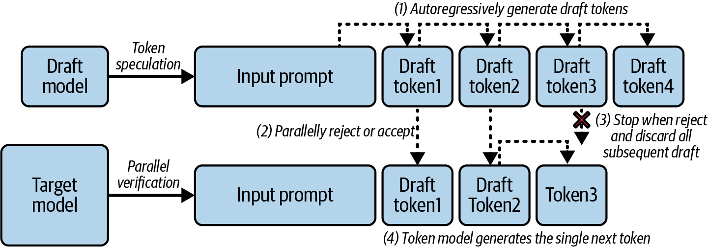
왜 정확도 손실이 없는가: rejection sampling은 단순히 "Draft가 맞았으면 통과"가 아니라, 통계적으로 최종 출력 분포가 Target 모델 단독으로 디코딩했을 때와 수학적으로 완전히 동일하도록 설계되어 있습니다. 토큰 x에 대해 Target의 확률을 p(x), Draft의 확률을 q(x)라 하면:
p(x) ≥ q(x)인 경우: 100% 확률로 수락합니다.p(x) < q(x)인 경우:min(1, p(x)/q(x))확률로 조건부 수락합니다. 거부되면 그 지점부터 이후 모든 드래프트 토큰은 폐기되고(자기회귀 특성상 앞 토큰이 바뀌면 뒤 토큰은 의미가 없으므로), Target이 재정규화된 분포max(0, p(x) − q(x))에서 새 토큰을 직접 샘플링합니다.
이 재정규화 덕분에 "일부는 빠른 모델이 만들고 일부는 느린 모델이 만들었다"는 흔적이 최종 분포에는 전혀 남지 않습니다 — 이것이 Speculative Decoding이 "품질 저하 없는 가속"이라고 불리는 이유입니다.
1.3 드래프트 모델을 얻는 3가지 방법
| 방법 | 동작 원리 | 장점 | 단점 |
|---|---|---|---|
| 기존 소형 모델 | 같은 계열의 더 작은 모델을 그대로 Draft로 사용(양자화 권장) | 구현이 간단, 별도 학습 불필요 | Target과 어휘/분포 정렬이 안 맞으면 수락률 낮음 |
| 증류(Distillation) | Target 모델의 출력을 흉내 내도록 작은 모델을 직접 학습 | 수락률↑, Target 스타일에 특화 | 별도 학습 비용 필요 |
| 셀프 드래프팅 (Medusa, EAGLE) | Target 모델 자체에 경량 예측 헤드/모듈을 추가해 스스로 초안 생성 | 별도 모델 불필요, GPU 메모리 절약, 높은 정렬도 | 헤드 학습/튜닝 필요(특히 EAGLE) |
| N-gram | 프롬프트/생성 텍스트 내 반복 n-gram 패턴을 테이블화해 매칭 (모델 불필요) | 오버헤드 거의 0, 구현 최간단 | 반복성 낮은 자유 창작에는 수락률 급락 |
1.4 대표 기법: Medusa vs EAGLE-1·2·3
- Medusa: Target 모델의 마지막 은닉 상태 위에 여러 개의 독립된 예측 헤드를 추가로 붙여, 한 번의 순전파에서 2번째·3번째·4번째 미래 토큰의 후보까지 동시에 병렬 예측합니다. 별도의 Draft 모델이 필요 없다는 게 특징입니다.
- EAGLE-1: 토큰 자체를 직접 예측하면 오답률이 높아지는 문제를 해결하기 위해, Target 모델의 내부 은닉 상태(hidden state)를 예측하는 보조 모듈을 도입했습니다. 예측된 은닉 상태로부터 토큰을 샘플링해 수락률을 크게 높였습니다.
- EAGLE-2: 현재 문맥의 예측 가능성에 따라 추측 트리의 깊이·모양을 동적으로 조절하는 동적 드래프트 트리(dynamic draft tree)를 도입했습니다.
- EAGLE-3: Target 모델의 단일 레이어가 아니라 여러 레이어의 특징(fused feature vectors)을 통합 입력으로 사용해 드래프트 정확도를 한층 더 향상시켰습니다. 현재 가장 뛰어난 수락률과 속도 향상을 제공하는 셀프 드래프팅 기법 중 하나로 꼽힙니다.
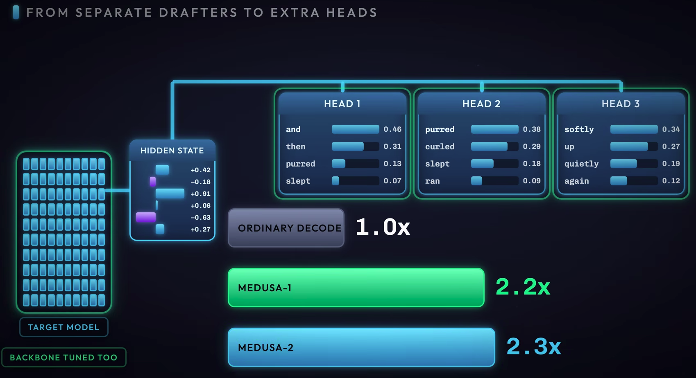
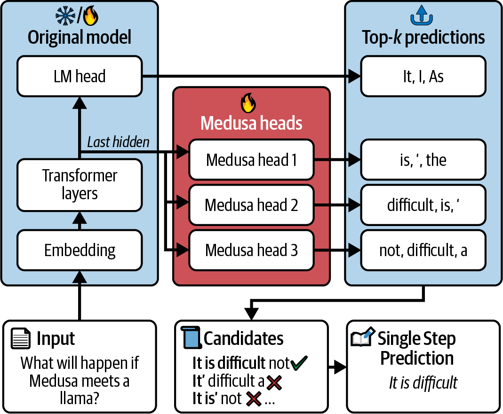
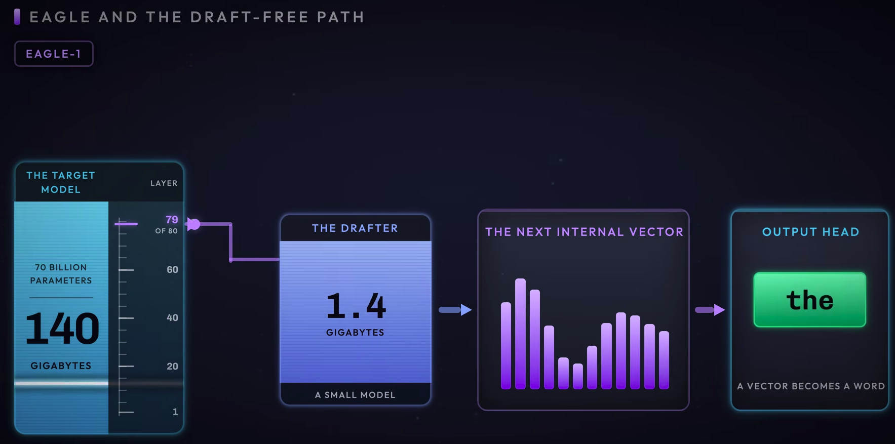
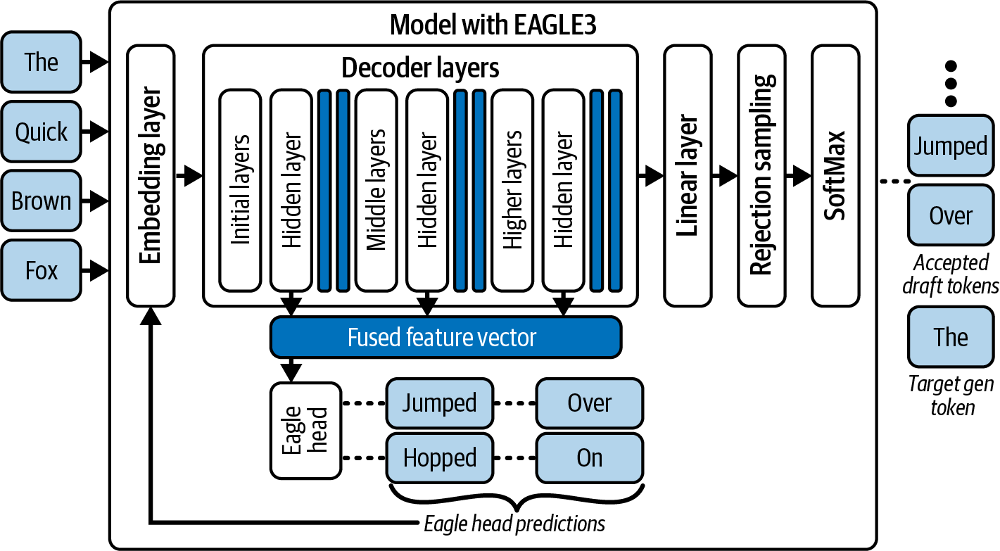
N-gram의 활용 시나리오: 별도 모델 없이도 (1) JSON·SQL처럼 매우 결정론적이고 반복적인 구조화된 출력을 생성할 때, (2) LLM에게 글을 다듬거나 미리 정해진 템플릿을 채우도록 요청해서 원본 프롬프트의 문구를 그대로 재사용할 수 있는 상황에서 특히 강력합니다.
1.5 핵심 튜닝 파라미터: K (드래프트 토큰 개수)
- K가 너무 작으면: 한 번에 검증하는 토큰이 적어 속도 이득이 제한적입니다.
- K가 너무 크면: 뒤쪽 토큰일수록 앞선 추측이 틀렸을 가능성이 누적되어 수락률이 급격히 떨어지고, Draft 모델을 여러 번 돌리는 오버헤드가 이득을 상쇄합니다.
실무적으로는 위치별(토큰이 몇 번째인지) 수락률을 모니터링하며 K를 튜닝합니다. 예를 들어 K=6일 때 위치별 수락률이 [0.8, 0.7, 0.6, 0.5, 0.10, 0.02]로 나왔다면, 마지막 두 자리는 거의 이득이 없으므로 K를 줄이는 것을 고려해야 합니다. 일반적으로 작은 K(2~4)가 안정적인 기준점이 되며, 구조화된 출력·함수 호출처럼 예측 가능성이 매우 높은 경우에는 16~32까지도 밀어붙일 수 있습니다. 다만 "고정된 절대 최적값"은 없으며, 모델 쌍·워크로드마다 달라지므로 반드시 실측 기반으로 튜닝해야 합니다.
Acceptance rate는 "Draft가 만든 전체 후보 토큰 중 Target이 채택한 비율"입니다(예: 총 12개 후보 중 6개 채택 → 0.5). 흥미로운 실무 인사이트는 "Draft는 생각보다 훨씬 작아도 된다"는 것입니다 — OPT 0.7B Target에 대해 125M과 350M 두 Draft를 비교했을 때, 350M이 acceptance rate는 더 높았지만(~0.8대 vs ~0.7대) 125M이 훨씬 가벼워서 전체 speculative decoding 성능은 오히려 더 좋았습니다. 즉 Draft 선택을 "얼마나 똑똑한가"가 아니라 "얼마나 가벼우면서 다음 쉬운 토큰을 잘 맞히는가"로 판단해야 합니다. 카카오의 자체 약 1B급 모델(Kanana 계열) 실험에서는 instruction tuning 이전 중간 체크포인트를 Draft로 재활용해 acceptance rate 0.6~0.8 구간에서도 이득을 관찰했고, 동시 사용자 수 12~16명까지는 여전히 이득이 유지됐습니다.
1.6 한계
- Prefill 단계에는 적용할 수 없습니다: Speculative Decoding은 "토큰이 한 번에 하나씩만 나오는" decode 단계의 비효율을 노리는 기법입니다. Prefill은 프롬프트 전체를 병렬로 처리하므로 이미 compute-bound라 GPU가 놀지 않습니다 — 추측할 이유도, 이득도 없습니다.
- 배치가 커지면 효과가 감소합니다: 배치 크기가 커지면 GPU가 원래도 여러 요청을 동시에 처리하며 바빠지므로(compute-bound 전환), Draft가 노리던 "유휴 연산력"이 사라집니다. throughput은 오히려 저하될 수 있습니다.
- 프로덕션화가 까다롭습니다: 하나의 GPU에서 두 모델(또는 추가 모듈)을 효율적으로 함께 운용하는 것 자체가 쉽지 않아, 최근 연구는 별도 Draft 모델보다 셀프 드래프팅·n-gram으로 무게중심이 옮겨가고 있습니다.
1.7 Hands-on 실습에서 확인된 현상 (Qwen3-32B, A100-80GB)
원문 실습은 vanilla(추측 없음) / n-gram / 개선된 n-gram / EAGLE-3 네 가지 설정을, 동시성(concurrency) 1과 16 두 조건에서 비교했습니다.
| 조건 | 결과 |
|---|---|
| 동시성=1 (저부하) | 개선된 n-gram: 바닐라 대비 +16% throughput / EAGLE-3: 56.5 vs 28.9 tokens/s로 거의 2배 |
| 동시성=16 (고부하) | n-gram 두 설정 모두 바닐라보다 오히려 느려짐(제안·검증 오버헤드가 CPU/GPU 부하로 작용) — EAGLE-3는 여전히 우세하나 격차 축소 |
| TTFT vs ITL (동시성=16) | n-gram·EAGLE-3 모두 ITL은 개선하지만, EAGLE-3는 TTFT가 오히려 크게 증가(추가 헤드/모듈의 프리필 오버헤드) |
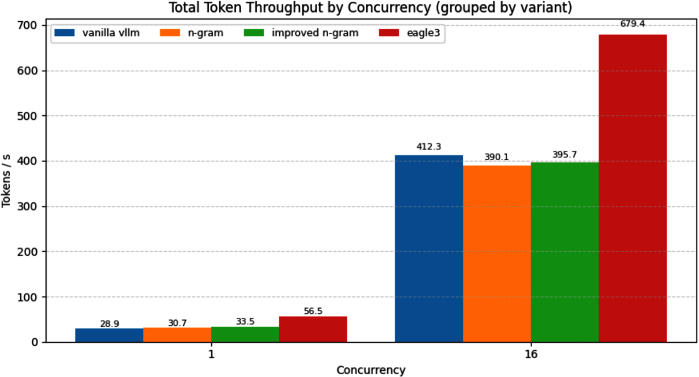
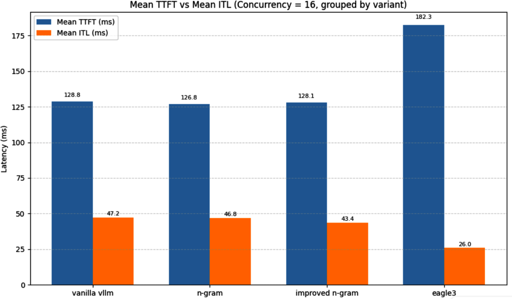
💡 핵심 통찰: 저부하(memory-bound)일 때 추측 디코딩 효과가 최대이며, 고부하(compute-bound)로 전환되면 오버헤드가 손해로 작용합니다. 즉 Speculative Decoding은 "항상 켜두면 좋은 기능"이 아니라 트래픽 패턴(동시성 수준)에 따라 껐다 켰다 해야 하는 조건부 최적화입니다. 실제로 저자의 개인 데스크톱(RTX, VRAM 16GB) 실습에서는 동시성 1임에도 vanilla 모델이 이미 GPU 98%를 사용 중이어서, 추측 디코딩을 켜자 오히려 역효과가 난 사례도 보고되었습니다 — "이론상 저부하"라도 하드웨어가 이미 포화 상태라면 예외가 생길 수 있다는 뜻입니다.
1.8 vLLM의 지원 현황과 QPS별 권장
| 방법 | Low QPS(지연시간 중시) | High QPS(처리량 중시) | 비고 |
|---|---|---|---|
| EAGLE | 높은 이득 | 중간~높은 이득 | 범용성 좋은 모델 기반 방식 |
| MTP(Multi-Token Prediction) | 높은 이득 | 중간~높은 이득 | 타깃 모델이 MTP를 네이티브 지원할 때 최적 |
| Draft Model | 높은 이득 | 중간 이득 | 별도 드래프트 모델 필요 |
| N-gram | 낮음~중간 이득 | 중간 이득 | 가볍고 켜기 쉬움 |
| Suffix Decoding | 낮음~중간 이득 | 중간 이득 | 추가 드래프트 모델 없이 동적 추측 깊이 조절 |
vllm serve <target-model> \
--speculative-config '{
"method": "eagle3",
"model": "<eagle3-speculator>",
"num_speculative_tokens": 3
}'1.9 Spec-Bench 벤치마크
Spec-Bench(Xia et al., ACL 2024 Findings) [2]는 다양한 추측 디코딩 기법(은닉 상태 기반 셀프 드래프팅인 EAGLE 계열, 다중 헤드 셀프 드래프팅인 Medusa/Hydra, 고전적 드래프트 모델 방식인 Speculative Sampling, N-gram/검색 기반인 Prompt Lookup Decoding·REST·Lookahead Decoding 등)을 동일한 디바이스·환경에서 공정하게 비교하기 위해 만들어진 통합 벤치마크입니다. 환경 설치 → 각 기법별 가중치 다운로드 → 추론 실행 → speedup 측정 → equal.py로 "추측 디코딩 결과가 자기회귀 결과와 완전히 동일한지" 검증하는 흐름으로 구성되어 있어, 앞서 배운 "정확도를 훼손하지 않는다"는 이론적 보장을 실제로 검증하는 스크립트까지 포함합니다.
1.10 보강: 드래프트 모델 없이 스스로 추측하기 — Lookahead Decoding
위 표의 "Lookahead Decoding"은 지금까지 본 기법들과 근본적으로 다른 접근입니다. Draft 모델도, 추가 학습도 전혀 필요 없습니다. 대신 모델이 매 스텝마다 미래의 여러 위치를 한꺼번에 대충 추측해보고, 다음 스텝에서 그 추측을 다시 조금 더 정교하게 개선하는 과정을 반복합니다. 확정된 진짜 토큰이 하나 나올 때마다, "그 토큰으로 시작하는" 과거에 만들어뒀던(그리고 당시에는 틀려서 버려졌던) 추측 조각들을 풀(pool)에서 꺼내 같은 검증 패스에서 함께 확인합니다 — 말하자면 모델이 자기 자신이 예전에 흘렸던 추측 부스러기로 스스로를 드래프팅하는 셈입니다. 멀티턴 대화 벤치마크인 MT-Bench에서 출력을 완전히 동일하게 유지하면서 최대 1.8배 가속을 달성한 것으로 보고됩니다.
KV 캐시 축출(eviction) 계열에도 최근 추가된 기법이 있습니다. SnapKV는 앞서 다룬 StreamingLLM·H2O와 같은 문제의식(중요하지 않은 KV는 버려서 메모리를 아끼자)을 공유하지만, 적용 시점이 다릅니다 — 토큰을 생성하기 전, 즉 프롬프트를 읽는 시점에 이미 프롬프트 자체의 KV 캐시를 미리 압축해둡니다.
1.11 보강: 토큰을 어떻게 "고르는가" — 샘플러와 제약 디코딩
지금까지는 "다음 토큰 후보를 어떻게 더 빨리 계산하는가"를 다뤘습니다. 이 절은 한 걸음 더 나아가 "계산된 확률 분포에서 실제로 어떤 토큰을 고를 것인가"를 다룹니다 — 같은 모델도 이 마지막 선택 방식에 따라 품질과 스타일이 크게 달라집니다.
- Greedy·Beam Search의 함정: 매번 가장 확률 높은 토큰(들)만 고르는 방식은 직관적이지만, Holtzman et al.(2020) 논문 [3]은 GPT-2에 beam search를 적용했을 때 모델이 같은 문장(예: 같은 대학 이름)을 계속 반복하는 "degeneration(퇴화)" 현상을 관찰했습니다. 확률이 가장 높은 경로가 항상 가장 자연스러운 문장은 아니라는 뜻입니다.
- Temperature: 최종 로짓을
T로 나눠 확률 분포를 뾰족하게(T<1, 확신에 찬 선택) 또는 평탄하게(T>1, 다양한 선택) 조절합니다. - Top-K: 확률 상위 K개 토큰으로 후보를 고정된 개수만큼 잘라냅니다. 구현은 간단하지만 K가 상황(문맥이 명확한지 애매한지)에 따라 항상 최적은 아닙니다.
- Top-P(Nucleus Sampling): 개수 대신 누적 확률이 P를 넘는 지점까지만 후보로 남깁니다. 모델이 확신할 때는 후보 집합이 자동으로 작아지고, 애매할 때는 자동으로 커지는 동적인 성질이 Top-K보다 유리한 지점입니다.
- Min-P: 1등 토큰의 확률 대비 상대적인 임계값으로 후보를 자릅니다(예: 1등 확률의 10% 미만인 토큰은 제외).
구조화된 출력(JSON/함수 호출 등)을 강제하는 제약 디코딩(Constrained Decoding)은 이 샘플링 단계에 개입합니다 — 정해진 포맷을 깨는 토큰의 로짓을 샘플링 직전에 -∞로 마스킹해 확률을 0으로 만드는 방식입니다. 어떤 토큰이 "포맷을 깨는지" 판정하는 방법은 문법의 복잡도에 따라 다릅니다.
- 정규식 수준(단순 패턴): 유한 상태 기계(FSM, Finite-State Machine)만으로 충분합니다. 상태마다 허용되는 다음 토큰 인덱스를 스키마당 한 번만 미리 계산해두면, 매 디코딩 스텝은 그 표를 찾아보는 것만으로 끝나 오버헤드가 거의 0에 가깝습니다(예: Outlines 라이브러리).
- JSON·SQL처럼 중첩 구조가 있는 문법: 여는 괄호와 닫는 괄호의 짝을 무한히 깊게 추적해야 하므로 FSM으로는 표현이 불가능하고, 스택(stack)을 가진 푸시다운 오토마타(Pushdown Automaton)가 필요합니다(예: XGrammar). 대부분의 토큰은 미리 사전 검사해두고, 문맥에 따라 달라지는 소수의 토큰만 GPU의 다음 forward 연산과 병렬로 CPU에서 실시간 스택 검사를 하는 식으로 구현해, 마스크 생성 오버헤드를 토큰당 40마이크로초 미만으로 유지합니다.
⚠️ 제약 디코딩은 출력이 문법적으로 파싱 가능하다는 것만 보장할 뿐, 내용이 사실이라는 것은 전혀 보장하지 않습니다 — 형식은 완벽한 JSON인데 값 자체는 틀릴 수 있습니다. 다만 이 메커니즘은 JSON 출력뿐 아니라, 에이전트가 미리 승인된 도구·행동 스키마 밖으로 벗어나지 못하게 가두는 안전장치로도 일반화해 쓸 수 있습니다.
2. 멀티 GPU·멀티 노드 추론 (TP·PP·EP·DP)
2.1 왜 다중 GPU는 "연산 전용" 문제를 "연산+통신" 문제로 바꾸는가
GPU 한 장 안에서는 모든 데이터가 그 GPU의 로컬 메모리(HBM)에 있으므로 통신이 필요 없습니다. 하지만 모델이나 배치를 여러 GPU에 나누는 순간, 각 GPU는 계산 결과의 일부만 가지게 되고, 최종 결과를 만들려면 GPU끼리 데이터를 주고받아야 합니다. 특히 KV 캐시는 시퀀스가 길어질수록 계속 커지는 상태(state)이기 때문에 — 계산이 끝나면 사라지는 activation과 달리 — 어느 GPU가 어떤 시퀀스의 KV 캐시를 들고 있는지 계속 추적하고 필요하면 옮겨야 합니다.
📐 왜 분산이 필수인가 — 숫자로 보는 동기: 예를 들어 1.6조(1.6T) 파라미터 모델을 FP8(1바이트/파라미터)로 저장하면 가중치만 1.6TB입니다. 최신 GPU 1장(B200, 192GB)보다 8배, H100(80GB)보다 20배 더 큽니다. 극단적으로 1비트까지 양자화해도(약 200GB) 여전히 1장에 안 들어갑니다 — 분산이 선택이 아니라 필수가 되는 지점입니다. 각 병렬화 기법을 분석할 때는 항상 두 가지를 물어보면 이해가 쉬워집니다: ① 무엇을 전송하는가(What)? ② 얼마나 자주 전송하는가(How often)?
2.2 5가지 집합 통신(Collective Communication) 패턴
| 패턴 | 동작 | 주로 사용하는 병렬화 |
|---|---|---|
| All-Reduce | 모든 GPU의 값을 합산한 뒤 결과를 모든 GPU에 다시 뿌림 | Tensor Parallelism |
| All-Gather | 각 GPU가 가진 조각을 모아 모든 GPU가 전체를 갖게 함 | Tensor/Sequence Parallelism |
| Reduce-Scatter | 값을 합산하며 동시에 각 GPU에 일부씩 분산 (all-reduce = reduce-scatter + all-gather 조합) | Tensor Parallelism 내부 구현 |
| All-to-All | 디바이스 간 데이터 조각이 서로 교차 이동 | Expert Parallelism (MoE 토큰 라우팅) |
| Point-to-Point | 한 디바이스에서 다른 디바이스로 1:1 전송 | Pipeline Parallelism (레이어 간 activation 전달) |
2.3 하드웨어 대역폭 격차: NVLink vs InfiniBand vs PCIe
| 연결 방식 | 범위 | 대역폭(대략) |
|---|---|---|
| NVLink | 노드 내 GPU 간 | H100 약 900GB/s, B200 약 1.8TB/s |
| InfiniBand / RoCEv2 | 노드 간(네트워크) | 약 50~100GB/s (NVLink보다 18~36배 느림) |
| PCIe (RDMA 없음) | 노드 내부/보조 경로 | 약 10GB/s대 |
NVLink는 같은 사무실 안에서 옆자리 동료에게 서류를 바로 건네주는 것이고, InfiniBand는 다른 건물에 있는 부서에 택배로 서류를 보내는 것과 같습니다. 같은 사무실 안에서는 초당 수백 번 서류를 주고받아도 괜찮지만, 다른 건물로 택배를 그렇게 자주 보내면 업무가 마비됩니다 — 그래서 "자주 주고받아야 하는 작업"(TP)은 같은 사무실(노드) 안에서만, "가끔 한 번씩만 주고받는 작업"(PP)은 다른 건물끼리도 괜찮도록 설계합니다.
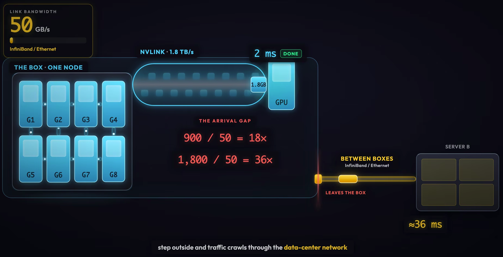
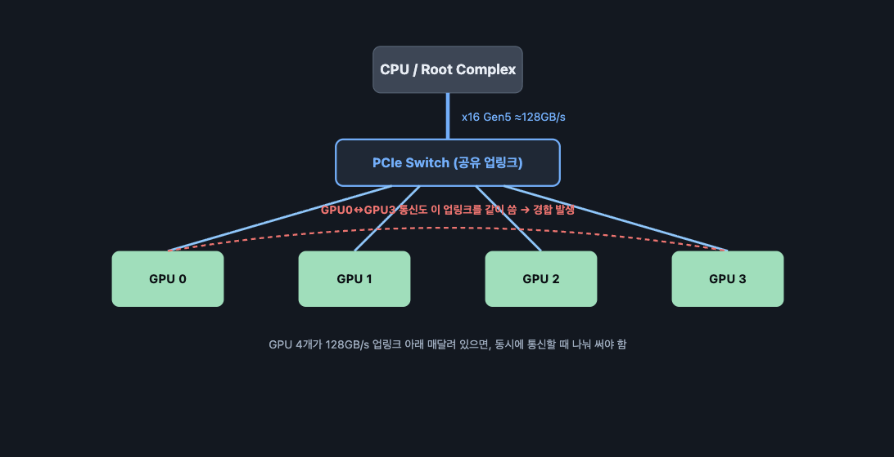
2.4 Tensor Parallelism (TP) — 너비 방향 분할
TP는 하나의 레이어(Attention, FFN)의 가중치 행렬을 열 단위로 쪼개서 여러 GPU에 나눠 올리는 방식입니다. 입력 데이터는 모든 GPU에 동일하게 복제되고, 각 GPU는 자신이 가진 가중치 조각만으로 부분 결과를 계산합니다. FFN의 첫 번째 선형층(GeLU 활성화 직전)은 결과를 이어붙이면(concat) 온전한 값이 복원되지만, 두 번째 선형층 이후에는 각 GPU의 결과가 최종 값의 "부분합"이므로 더하기(all-reduce)가 필요합니다. GeLU 활성화 자체는 원소별(element-wise) 연산이라 통신 없이 독립적으로 계산할 수 있습니다.
Attention도 마찬가지 원리입니다 — 각 GPU가 서로 다른 어텐션 헤드를 전담해서 독립적으로 계산하고, 마지막에 결과를 합칠 때만 한 번의 all-reduce가 필요합니다. 결과적으로 Attention과 FFN 각각 1회씩, 트랜스포머 레이어 하나당 총 2회의 all-reduce가 필요합니다. 80개 레이어 모델이라면 순전파 1회당 80 × 2 = 160회의 GPU 간 통신이 발생합니다.
📐 Megatron Rule [5]: "TP 그룹의 크기는 한 노드 안의 NVLink로 연결된 GPU 수(보통 8개)를 넘지 않아야 한다"는 것이 Megatron-LM 이래로 지금까지 유효한 실무 규칙입니다. TP는 레이어마다 all-reduce가 필요할 만큼 통신이 매우 빈번하므로, NVLink 없이 PCIe만 있는 환경에서 TP를 크게 설정하면 매 레이어의 all-reduce가 병목에 걸려 실용성이 없어집니다.
8-way TP를 적용하면 각 GPU는 전체 가중치의 1/8, 전체 연산량의 1/8만 담당합니다 — 통신 오버헤드가 있더라도 GPU 1장이 레이어 전체를 순차 처리하는 것보다 훨씬 빠르게(거의 8배에 가깝게) 완료됩니다.
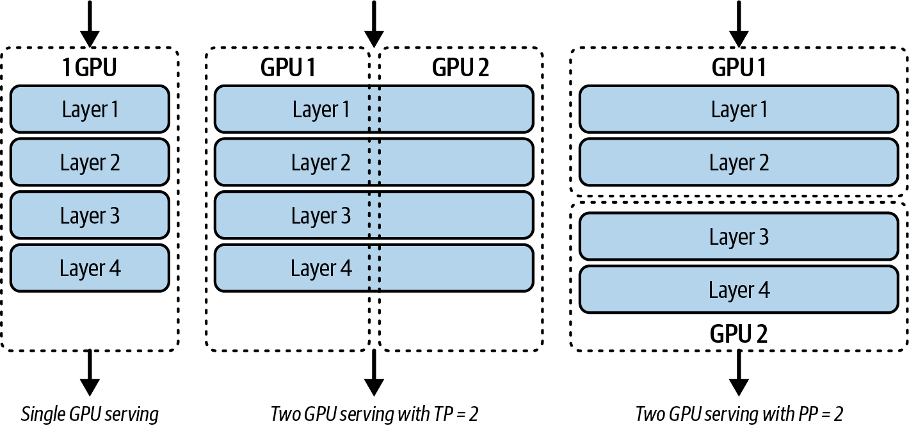
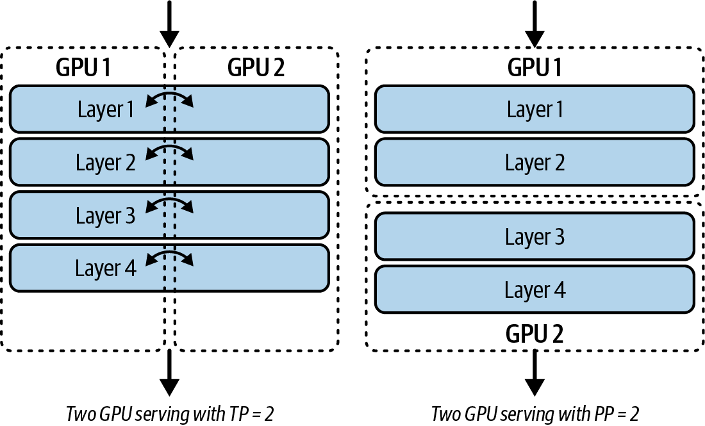
2.5 Pipeline Parallelism (PP) — 깊이 방향 분할
PP는 레이어를 깊이(depth) 방향으로 나눕니다. 예를 들어 80개 레이어 모델을 4개 GPU에 나누면 GPU마다 20개 레이어씩 담당하고, 데이터는 GPU 0 → 1 → 2 → 3 순서로 편지 봉투처럼 순차 전달(point-to-point)됩니다. TP가 "모든 레이어 안에서 GPU를 두 번씩 동기화"한다면, PP는 "각 경계(스테이지 전환 지점)에서 딱 한 번씩만 메시지를 전달"합니다 — 앞서 본 160(TP) vs 3(PP, 4-스테이지 기준 경계 3곳)이라는 극명한 대비가 바로 이 구조적 차이를 보여주는 예시입니다(정확한 절대값은 레이어 수·구성에 따라 달라지지만, "TP가 PP보다 통신 횟수가 압도적으로 많다"는 방향성은 정확합니다). 이 덕분에 TP는 초고속 NVLink가 필요한 반면, PP는 상대적으로 느린 노드 간 연결에서도 잘 동작할 수 있습니다.
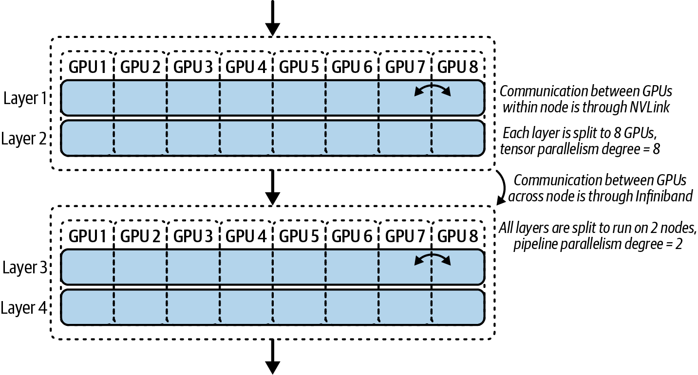
파이프라인 버블(Pipeline Bubble): PP의 핵심 단점은, 배치를 하나씩만 흘려보내면 대부분의 GPU가 "채워지길 기다리거나(fill)" "비워지길 기다리는(drain)" 유휴 상태가 된다는 것입니다. 이를 여러 개의 마이크로배치로 쪼개 파이프라인에 연속으로 흘려보내면 유휴 비율을 크게 줄일 수 있습니다.
실제 서빙에서는 Prefill은 프롬프트 전체가 한 번에 들어오므로 파이프라인이 거의 꽉 차서 효율적입니다(idle 3% 수준). 하지만 Decode는 한 스텝에 토큰 1개씩만 자기회귀적으로 생성하므로, 나머지 GPU 3대가 계속 놀아 idle 75%까지 치솟을 수 있습니다. 이를 연속 배칭(continuous batching)으로 여러 요청을 동시에 흘려보내 마이크로배치 효과를 내면 idle을 75%→8%대까지 극적으로 낮출 수 있고, 더 발전된 방식으로는 PD Disaggregation(3절 참고)이 prefill·decode를 아예 다른 GPU 풀로 분리해 이 문제를 근본적으로 해결합니다.
2.6 Expert Parallelism (EP) — MoE 전문가 분산
MoE 모델에서는 라우터가 각 토큰을 소수의 전문가(expert)에게만 선택적으로 보냅니다(자세한 원리는 5절 FFN·MoE 딥리서치 참고). 문제는 토큰당 연산량은 줄어들어도 전체 전문가 파라미터의 총합은 여전히 매우 커서 단일 GPU 메모리에 다 담기지 못하는 경우가 많다는 것입니다. EP는 전문가들을 여러 GPU에 나눠 배치해서, 각 토큰이 라우터가 선택한 전문가가 실제로 위치한 GPU로만 전달되게 합니다.
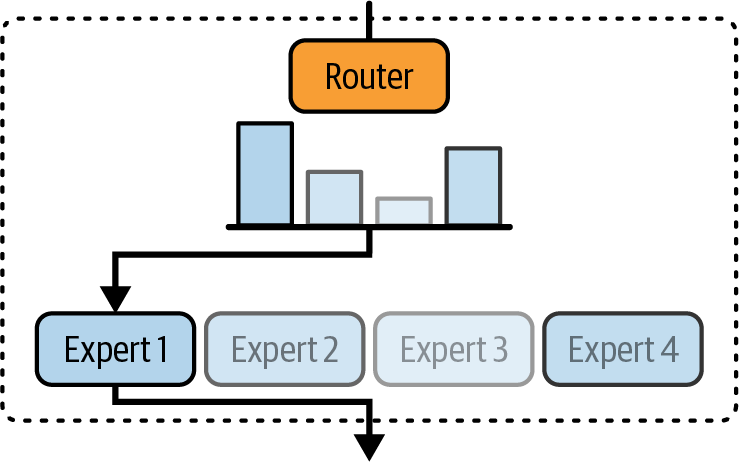
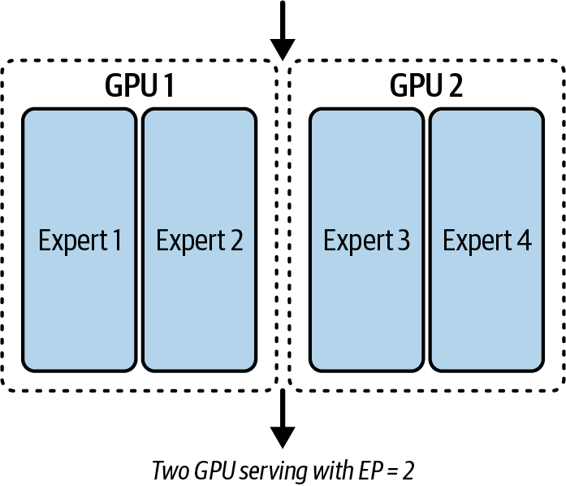
문제는 토큰마다 목적지 GPU가 매번 달라진다는 점입니다 — 이 때문에 MoE 레이어마다 dispatch(토큰을 전문가 GPU로 전송)와 combine(처리 결과를 원래 위치로 수집), 총 2회의 all-to-all 통신이 필요합니다. 이 all-to-all은 통신 패턴이 배치마다 재구성되어 예측이 불가능하고, 노드를 넘어가는(cross-node) 경우 레이어 시간의 70% 이상, 전체 추론 지연시간의 최대 40% 안팎을 차지할 수 있는 실질적 병목으로 지목됩니다. DeepEP(DeepSeek, 2025)는 이 dispatch/combine 전용 all-to-all 통신을 최적화하기 위해 공개된 라이브러리로, prefill용 고처리량 모드와 decode용 저지연 모드를 구분해 제공합니다.
보강: 이 통신 병목을 실전에서 억누르는 3가지 트릭 — 실제 배치 사례(DeepSeek V3 decode 서빙, 총 320 GPU)에서 확인된 내용입니다.
- 노드 제한 라우팅(Node-Limited Routing): 노드 내부는 빠른 NVLink, 노드 사이는 느린 InfiniBand라는 하드웨어 구조를 그대로 이용합니다. 256개 라우팅 전문가를 8개 그룹(노드당 1그룹)으로 나누고, 토큰 하나가 방문할 수 있는 노드 수를 최대 4개로 제한해 dispatch/combine 트래픽 대부분이 빠른 노드 내부 NVLink 안에서 끝나게 합니다.
- 연산-통신 오버랩: 마이크로배치 2개를 서로 엇갈리게 동시 실행합니다 — 한쪽 마이크로배치가 GPU에서 연산하는 동안, 다른 쪽의 all-to-all 통신이 네트워크에서 동시에 진행되어 통신 시간이 연산 뒤에 숨겨집니다.
- 인기 전문가 복제(Hot Expert Duplication): 실제 트래픽은 절대 완벽하게 고르지 않으므로, 자주 선택되는 "인기 전문가"의 사본을 여유 GPU에 추가로 배치해 요청 큐를 분산시킵니다. DeepSeek V3의 decode 서빙 사례에서는 총 320개 GPU 중 256개 GPU에 라우팅 전문가 256개를 1:1로 배치하고, 나머지 64개 GPU는 공유 전문가와 인기 전문가들의 복제본 전용으로 씁니다.
2.7 Data Parallelism (DP) — 복제 기반 확장
DP는 모델을 쪼개는 대신 완전한 복제본을 여러 개 만들어, 서로 다른 요청을 각 복제본이 독립적으로 처리하게 합니다. 추론 시에는 그래디언트가 없으므로 복제본 간 통신이 사실상 0바이트입니다(학습 시에는 매 스텝 그래디언트 all-reduce가 필요하지만, 추론에는 해당 사항이 없습니다). 복제본을 늘려도 개별 요청 하나의 지연시간(latency)은 그대로이며, 오직 동시에 처리할 수 있는 요청 수(처리량)만 늘어납니다.
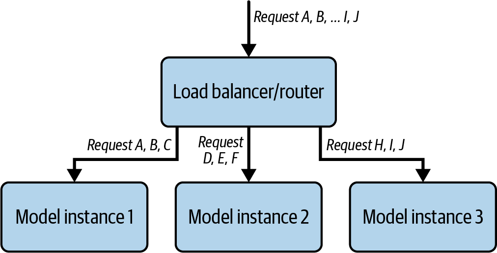
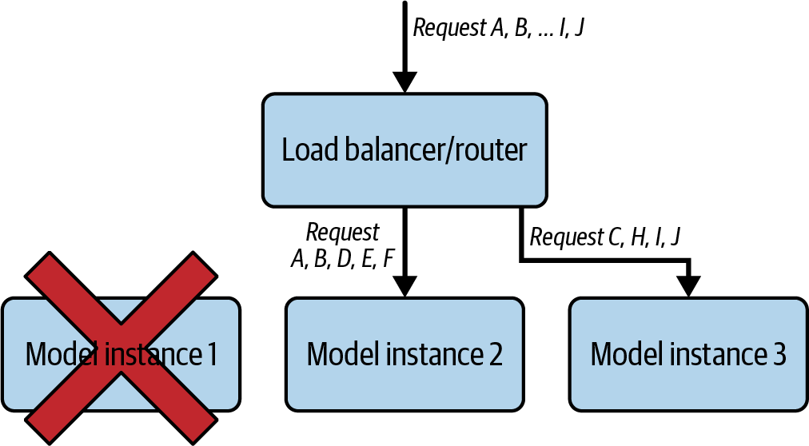
핵심 과제는 "어떤 요청을 어느 복제본으로 보낼 것인가"라는 라우팅 전략이며, 아래 4단계로 발전해왔습니다.
| 전략 | 동작 원리 | 한계 |
|---|---|---|
| Round-robin | 순서대로 순환 배분 | 요청 길이 편차 무시 → 부하 불균형 |
| Least connections | 현재 처리 중인 요청이 가장 적은 곳으로 | 진행 중 요청의 길이/난이도는 고려 못함 |
| Latency 기반 | 실시간 응답 속도를 모니터링해 가장 빠른 곳으로 | 지연시간 측정 오버헤드 존재 |
| Cache-aware routing | 동일 프리픽스를 가진 요청을 이미 그 KV 캐시를 보유한 인스턴스로 라우팅 | KV 캐시 지역성 추적 등 고급 라우터(NVIDIA Dynamo KV Router, llm-d) 필요 |
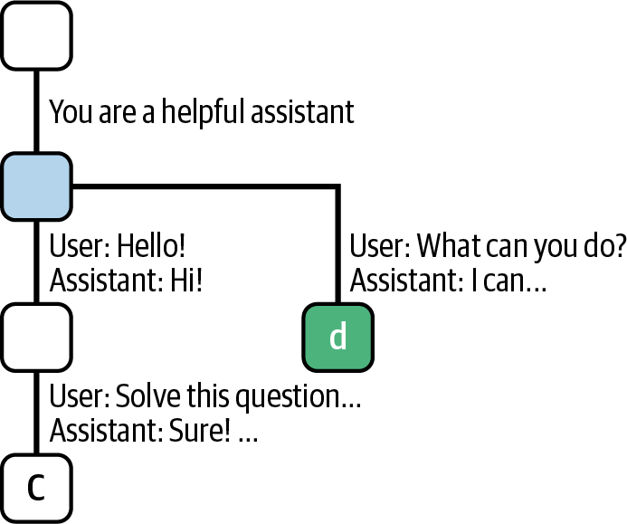
LLM 서빙 워크로드는 요청마다 처리 비용 편차가 크고 GPU가 매우 비싸기 때문에, 실제로는 KV 캐시 적중률, GPU 메모리 사용률, 큐 대기열 길이, SLA 지연시간 예산 등 다양한 실시간 신호를 종합해 라우팅을 결정하는 시스템으로 계속 발전하고 있습니다.
Ring All-Reduce의 대역폭 하한(bandwidth floor): 값을 슬라이스 단위로 링을 따라 전달하는 방식으로 all-reduce를 구현하면, GPU 1대가 보내는 총 전송량은 항상
2 × (메시지 크기)로 고정됩니다 — GPU가 8개든 16,000개든 GPU당 전송량은 일정하다는 뜻입니다(전체 통신 시간은 GPU 수에 비례해 늘어나지만, 개별 GPU의 부담은 늘지 않습니다). 실제로 NVIDIA의 한 실측에서는 8B 모델을 512개 GPU로 분산했을 때 통신 오버헤드 때문에 이상적인 선형 확장의 약 75% 수준 처리량만 달성했다고 보고됩니다.🗺️ 참고(보강): TP·PP·EP·DP + Sequence Parallelism(SP) — Ring Attention의 작동 원리 — 실전 클러스터에서는 이 영상이 보여주듯 4가지 외에 Sequence Parallelism(SP, 순차 병렬처리)이라는 5번째 축도 등장합니다. 원문 노션 자료에서는 SP를 "다음 기회에"로 건너뛰었지만, 관련 영상 자막에서 그 구체적 메커니즘(Ring Attention, 2023) [7]을 확인할 수 있었습니다: GPU들을 링(원형) 모양으로 배치하고, 각 GPU는 자신이 맡은 시퀀스 구간의 KV 블록으로 attention을 계산하면서 동시에 다음 블록을 이웃 GPU로부터 미리 전달받습니다. 이 계산이 전송보다 오래 걸리는 한, 통신 시간이 연산 뒤에 완전히 숨겨져 눈에 보이는 오버헤드가 거의 없어집니다. 이 방식의 핵심 효과는 컨텍스트 길이의 한계가 "GPU 1개의 메모리 용량"이 아니라 "링 전체의 결합 메모리"로 바뀐다는 것 — 여러 GPU의 메모리를 하나의 거대한 저수지처럼 이어 붙이는 셈입니다. DeepSeek 계열의 100만 토큰급 윈도우나 Meta Llama 4 Scout의 1,000만 토큰 윈도우 같은 초장문 컨텍스트가 바로 이 기술을 기반으로 합니다. 실전 배치 지형도에서는 TP·EP가 노드 내부(NVLink)에, PP가 유일하게 노드 경계를 넘고, DP가 완성된 유닛을 복제하는 식으로 5가지가 함께 조합됩니다.
2.8 TP vs PP 선택 의사결정 흐름
flowchart TD
A[모델이 GPU 1장에 들어가는가?] -->|예| B[GPU 1장 사용\n분산 불필요]
A -->|아니오| C[양자화로 줄여보기\nFP8/W4A16]
C --> D{그래도 안 들어가는가?}
D -->|아니오| B
D -->|예| E{NVLink로 연결된\n노드 내부인가?}
E -->|예, 8-GPU 이내| F[TP 사용\ntensor-parallel-size]
E -->|아니오, PCIe만 있음| G[TP 최소화 또는 PP 사용]
F --> H{노드 하나로도 부족한가?}
H -->|예, 멀티노드 필요| I[노드 내부=TP, 노드 간=PP\n하이브리드: TP=8, PP=2 등]
H -->|아니오| J[단일 노드 TP로 충분]
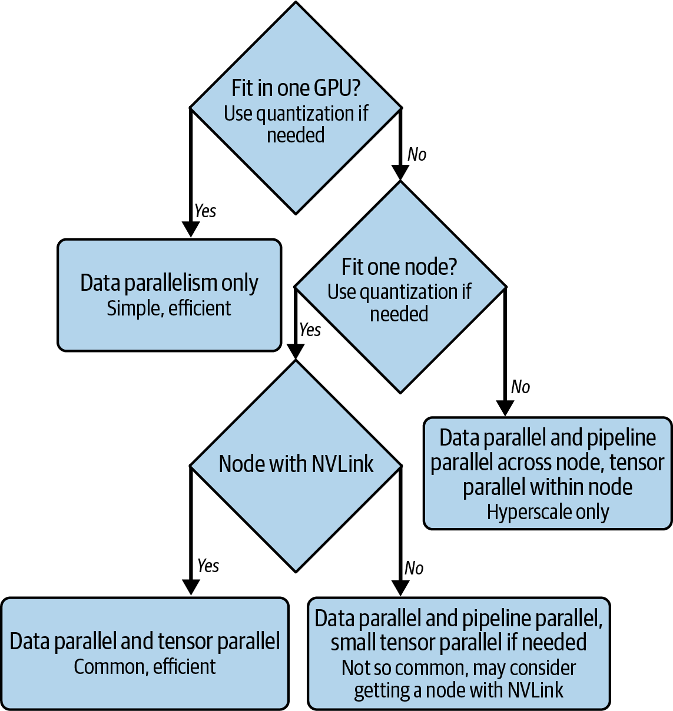
2.9 vLLM 실전 설정
# TP + PP 조합
vllm serve MODEL_NAME \
--tensor-parallel-size 8 \
--pipeline-parallel-size 2
# EP 활성화 (MoE 모델). 관계식: EP_SIZE = TP_SIZE × DP_SIZE
vllm serve deepseek-ai/DeepSeek-V3-0324 \
--tensor-parallel-size 1 \
--data-parallel-size 8 \
--enable-expert-parallel
# → TP=1, DP=8이므로 EP=8
# EPLB(Expert Parallel Load Balancer): 특정 전문가에 트래픽이 쏠리는
# hot expert 문제를 동적으로 재조정
vllm serve Qwen/Qwen3-30B-A3B \
--enable-eplb \
--eplb-config '{"window_size":1000,"step_interval":3000,"num_redundant_experts":2}'DP 배포 방식은 vLLM 자체 내장 로드밸런서(Internal LB), 노드별 API 서버를 두는 Hybrid LB, 여러 머신에 걸친 배포를 위한 Ray 백엔드 등 여러 옵션이 있습니다. all-to-all 통신 백엔드도 워크로드에 따라 deepep_high_throughput(멀티노드·prefill 위주)와 deepep_low_latency(멀티노드·decode 위주)로 나뉘어 선택할 수 있습니다.
3. Prefill-Decode(PD) 분리 서빙
3.1 TP/PP만으로 풀리지 않는 문제
TP·PP는 "모델을 어떻게 GPU에 나눠 담을까"만 해결할 뿐, prefill과 decode라는 완전히 다른 두 워크로드가 같은 GPU를 공유하면서 생기는 간섭(interference) 문제는 해결하지 못합니다.
| 단계 | 특성 | 결정하는 지표 |
|---|---|---|
| Prefill | 프롬프트 전체를 한 번에 병렬 처리 → 연산 집약적(compute-bound), GPU 텐서 코어 활용률 매우 높음 | TTFT (첫 토큰까지 시간) |
| Decode | 토큰을 하나씩 순차 생성 → 메모리 대역폭 집약적(bandwidth-bound), 연산 유닛은 놀지만 가중치 읽기가 병목 | ITL (토큰 간 지연) |
하나의 GPU 설정으로 두 워크로드를 동시에 처리하려 하면 어느 쪽도 100% 만족시키지 못하는 타협이 발생합니다. 6장의 청크드 프리필(chunked prefill)로 일부 완화는 가능하지만 근본적 해결책은 아닙니다.
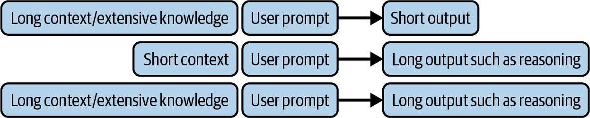
새 프롬프트가 진행 중인 decode 배치에 그대로 섞여 들어가면 토큰 간 지연(ITL)이 최대 28배까지 늘어나고, 실제 서비스에서는 사용자가 답변 중간에 몇 초씩 멈추는 현상(stall)으로 나타납니다. Sarathi-Serve는 프리필을 거의 같은 크기의 청크로 쪼갠 뒤, 매 이터레이션마다 고정된 토큰 예산 안에서 진행 중인 decode를 먼저 채우고 남는 예산만 대기 중인 프롬프트 청크에 배정하는 "stall-free 스케줄"을 제안했습니다(청크 크기가 작으면 decode는 매끄럽지만 그 프롬프트 자신의 TTFT가 늦어지고, 크면 반대인 트레이드오프가 있습니다). 벤치마크 결과 tail latency 제약 하에서 vLLM 대비 Mistral-7B(GPU 1장)는 2.6배, GPU 2장 구성은 최대 3.7배, Falcon-180B+파이프라인 병렬 조합에서는 최대 5.6배의 서빙 용량 개선을 보였습니다(균일한 이터레이션 크기가 부수적으로 파이프라인 버블도 줄여줍니다). vLLM은 현재 이 방식의 청크드 프리필을 기본으로 제공합니다.
3.2 PD 분리의 4가지 핵심 이점
- TTFT/ITL 독립 최적화: 입력이 긴 워크로드는 prefill 풀에 자원을 몰아 TTFT를 줄이고, 출력이 긴 워크로드는 decode 풀에 자원을 몰아 ITL을 줄일 수 있습니다. 간섭이 없어 ITL도 더 안정적입니다.
- 워크로드별 독립 최적화: prefill은 배치를 키워 텐서 코어를 포화시키고, decode는 배치를 키워 메모리 대역폭 병목을 완화하는 등 서로 다른 배치 크기·병렬화 전략을 독립 적용할 수 있습니다.
- 하드웨어 선택 다양화: prefill에는 연산 가성비가 좋은 GPU(H100)를, decode에는 메모리 대역폭이 뛰어난 GPU(H200)나 저비용 GPU(L40S)를 매칭해 TCO를 절감할 수 있습니다. H100과 H200은 FLOPS 사양은 같지만 H200이 메모리 용량(80GB→141GB)과 대역폭(3.35TB/s→4.8TB/s)이 더 큽니다.
- 독립적·비대칭적 스케일링: prefill은 버스트성이라 공격적인 오토스케일링에, decode는 더 예측 가능하고 안정적인 스케일링 전략에 적합합니다.
3.3 아키텍처와 KV 캐시 전송(핸드오프)
sequenceDiagram
participant C as Client
participant Ctl as Controller/Gateway
participant P as Prefill Pool (Compute-bound)
participant D as Decode Pool (Bandwidth-bound)
C->>Ctl: 프롬프트 요청
Ctl->>P: Prefill 배정
P->>P: 프롬프트 병렬 처리 + KV 캐시 생성
P-->>D: KV 캐시 전송 (NIXL / GPU Direct RDMA)
P-->>C: 첫 토큰 반환 (TTFT)
D->>D: 이후 토큰 순차 생성
D-->>C: 토큰 스트리밍 (ITL)
llm-d 같은 대표 스택은 vLLM과 Gateway(Envoy)를 조합해 이 흐름을 구현합니다. KV 전송은 NIXL(NVIDIA Inference Xfer Library)이 담당하는데, CPU를 거치지 않고 GPU 메모리 간 직접(RDMA) 전송하는 Zero-Copy 방식으로, 필요한 KV 블록만 선택적으로 pull해올 수 있습니다.
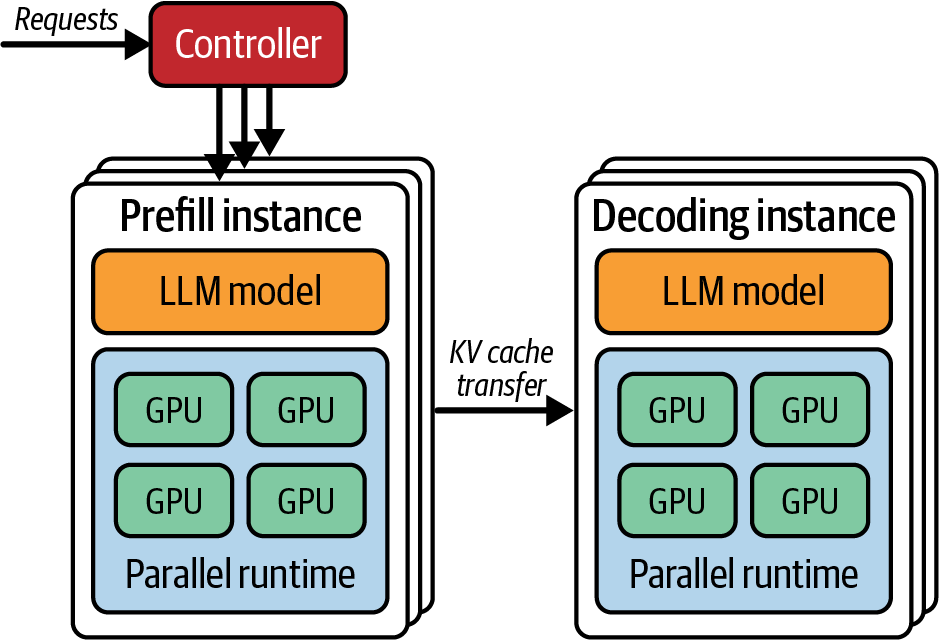
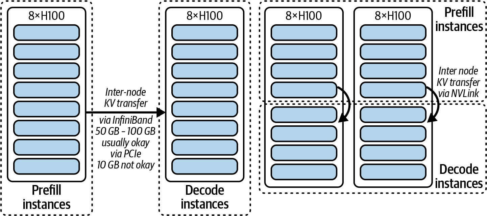
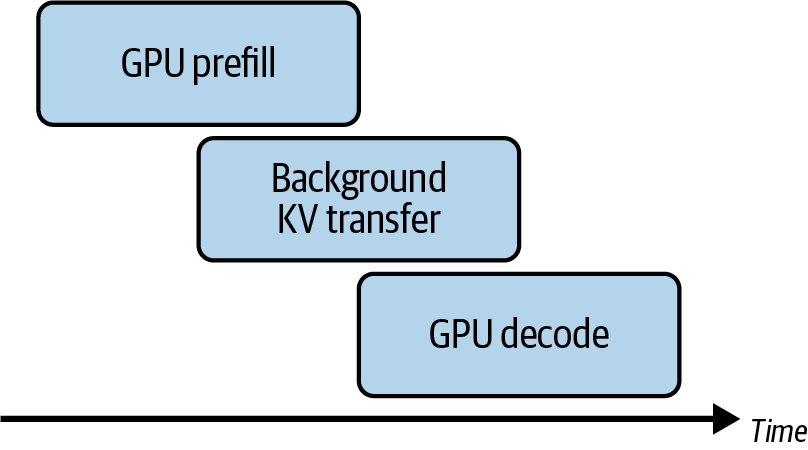
3.4 KV 캐시 전송량 계산
KV 캐시 크기는 입력 길이에 거의 선형 비례합니다 — 예를 들어 8B 모델·1,024토큰 기준 약 0.1~0.15GB, 입력이 10배(10,240토큰)면 요청당 1~1.5GB가 됩니다. 여기에 처리량(예: 초당 16개 요청)을 곱하면 초당 최대 약 25GB의 KV 캐시를 전송해야 한다는 예시 계산이 나옵니다(정확한 절대값은 입력 길이·처리량 가정에 따라 달라지는 예시 수치입니다).
| 인터커넥트 | 대역폭 | 25GB/s 감당 여부 |
|---|---|---|
| NVLink (노드 내) | ~900GB/s 이상 | 여유 있게 감당 |
| InfiniBand (노드 간, RDMA) | ~50~100GB/s | 일반적으로 감당 가능한 수준 |
| PCIe (노드 간, RDMA 없음) | ~10GB/s | 감당 불가 → 병목 |
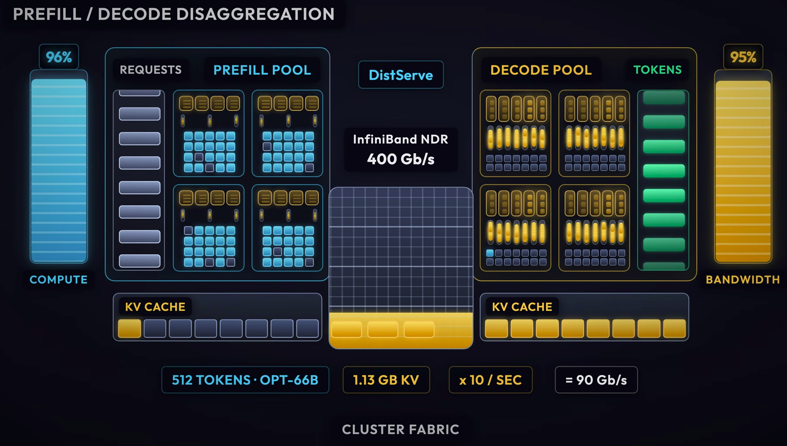
KV 캐시 전송 오버헤드를 줄이는 4가지 기법: ① 청크 전송 — 전체를 한 번에 보내지 않고 스트리밍처럼 블록 단위로 전송, ② 비동기·논블로킹 전송 — prefill 연산과 전송을 오버랩시켜 전송 시간을 연산 뒤에 숨김, ③ 레이어 단위 전송 — 레이어별로 독립적인 KV 캐시 특성을 활용해, 앞 레이어가 끝나는 대로 그 레이어의 캐시를 먼저 전송, ④ KV 캐시 압축/양자화 — 전송할 데이터 자체의 크기를 줄임. 이런 최적화를 모두 적용하면 PD 분리로 인한 오버헤드를 요청당 전체 지연시간의 1% 미만까지 줄일 수 있다는 연구 결과(Wang et al., 2025)가 있습니다.
3.5 실증 수치: DistServe와 Splitwise
⚠ 정정(교차검증 반영): "DistServe [9]가 12.6배 효율적"이라고 단순화하면 부정확합니다. 원 논문 기준 정확히는 동일 지연 제약 하에서 최대 7.4배 더 높은 goodput(SLO를 만족하는 유효 처리량)을 달성하거나, 처리량을 유지하면서 최대 12.6배 더 엄격한 SLO를 만족시킬 수 있다는 것으로, 두 수치는 서로 다른 비교 축(goodput 극대화 vs SLO 강화)에서 나온 결과이며 동시에 달성되는 값이 아닙니다. 마찬가지로 Splitwise [10]도 "80% 비용으로 1.4배 처리량" 또는 "동일 비용/전력 예산에서 2.35배 처리량" 중 하나를 선택 가능한 두 운영 지점이며, "and"가 아니라 "or" 관계로 이해해야 합니다.
3.6 P/D 노드 비율 벤치마크 — "무조건 적용이 능사는 아니다"
실제 프로덕션 클러스터(SGLang, 96×H100 등)에서 prefill:decode 노드 비율을 1p/3d, 2p/2d, 3p/1d로 다르게 구성해 baseline(분리 안 함)과 비교한 실측 결과는 다음과 같습니다.
| 워크로드 \ 비율 | 1p / 3d | 2p / 2d | 3p / 1d |
|---|---|---|---|
| Prefill-Heavy | FAIL(타임아웃) | TTFT 악화, ITL/Latency 개선 | TTFT 소폭 악화, ITL/Latency 개선 |
| Decode-Heavy | TTFT/ITL 변화 없음, Latency 악화 | 동일 | 동일 |
| Prefill+Decode 혼합 | FAIL | TTFT 악화, ITL/Latency 개선 | TTFT 소폭 악화, ITL/Latency 개선 |
Prefill 요청이 많은데 decode 노드 비중이 지나치게 높으면(1p/3d) prefill 노드가 병목이 되어 완전히 실패하고, prefill 비중을 늘리면(2p/2d, 3p/1d) ITL과 전체 latency는 개선되지만 TTFT는 오히려 악화되는 트레이드오프가 나타났습니다. Decode-heavy 워크로드에서는 PD 분리 이득이 거의 없고 오히려 latency가 악화됐습니다. 즉 PD Disaggregation은 워크로드 특성에 맞게 P/D 비율을 튜닝해야만 효과를 보는 기법이며, 무조건 적용한다고 좋아지는 것은 아닙니다.
3.7 MoE 모델에서는 Prefill/Decode마다 EP 크기도 다르게
실제 프로덕션에서는 Prefill Pool은 EP32(GPU당 전문가 9개씩 조밀하게), Decode Pool은 EP144(GPU당 전문가 2개씩 성기게 분산)처럼 서로 다른 EP 크기를 적용하는 사례가 보고됩니다. 배치가 작을 때(예: 256개 전문가 중 8개 선택, 배치 64 → 전문가당 겨우 토큰 2개)는 비효율적이므로, decode 단계에서 continuous batching으로 큰 배치를 모아야 EP의 스파스성이 의미를 가집니다("sparsity needs the big batch"). Mooncake(Kimi)처럼 Prefill(EP32)과 Decode(EP144) 사이에 전용 KV 캐시 풀을 두는 실제 구현 사례도 있습니다.
3.8 언제 PD 분리를 써야 하는가
- 트래픽에 prefill-heavy(긴 문서 요약 등)와 decode-heavy(긴 대화 생성 등)가 뚜렷이 혼재되어 서로 간섭이 클 때
- TTFT와 ITL 각각에 대해 엄격한 SLO가 별도로 정의되어 있을 때
- 노드/GPU 자원을 워크로드별로 비대칭적으로 확장해야 할 만큼 규모가 클 때
- 반대로 트래픽이 균일하거나 규모가 작다면, 분리로 인한 운영 복잡도·KV 전송 지연이 이득보다 클 수 있어 co-located 방식이 나을 수 있습니다(3.6절 벤치마크 참고).
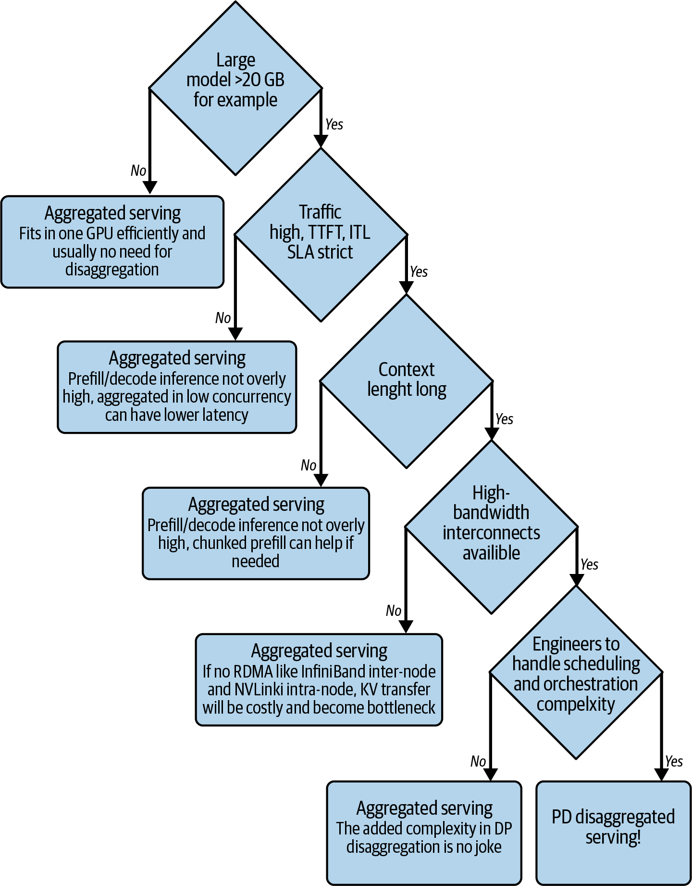
단순
docker run으로 단일 인스턴스를 띄우는 것과 달리, 실제 프로덕션 분산 추론은 TTFT·ITL·처리량·캐시 적중률·고가용성을 동시에 만족해야 하는 복잡한 오케스트레이션이 필요합니다. llm-d는 Kubernetes 위에서 Envoy 기반 API Gateway(BBR·EPP 플러그인으로 캐시 인지 라우팅 수행)와 Kaito(Kubernetes AI Toolchain Operator, 워크로드 Pod 수명주기·GPU 노드 프로비저닝 관리)를 결합한 스택으로 이를 구현합니다. 고가의 GPU 없이도 컨트롤 플레인을 검증할 수 있도록 Shadow Pod 기반의 GPU Mocker 기능으로 70개 이상의 End-to-End 테스트를 안전하게 수행한다는 점도 확인됐습니다.3.9 실전 사례: LY Corporation의 셀프호스팅 플랫폼 평가 (보강)
[CNCF] "LLM 셀프 호스팅 플랫폼 최적화" 영상(LY Corporation 발표) [12]은 월 약 6,500억 토큰, 모델 10개, 사내 테넌트 30개 규모의 실제 온프레미스 멀티테넌트 플랫폼에서 이 장의 기법들을 어떻게 평가·도입했는지 보여주는 값진 사례입니다.
에이전틱 워크로드는 특히 고유한 과제를 만듭니다 — 추론 능력이 필요해 모델이 커지고(서버당 GPU 8~16장 이상), 대화가 진행될수록 컨텍스트가 길어져 메모리를 압박하며, 에이전트 하니스가 반복 호출·서브에이전트를 스폰해 트래픽이 버스티해지고, 멀티턴 캐시 재사용을 위해 이전 턴의 캐시를 가진 Pod로 정확히 라우팅해야 합니다.
3축 평가 프레임워크
LY Corp는 이 장에서 다룬 4가지 기법(양자화·추측 디코딩·KV 캐시 인지 라우팅·PD 분리)을 아래 3가지 축으로 채점했습니다: ① 시스템 성능(TTFT/ITL/GPU 메모리/처리량) ② 시스템 아키텍처(기존 클러스터에 추가되는 구조적 복잡도) ③ 유스케이스 적합성(위 2×2 워크로드 분면과의 궁합).
| 기법 | 실측 결과 | 평가 |
|---|---|---|
| 양자화(FP8) | 전 동시성 구간에서 BF16 대비 처리량·TTFT·ITL 모두 우세 | 아키텍처 복잡도 거의 0(vLLM 네이티브). 단 Hopper 이상 GPU에서만 이득 확실. "강력 추천" |
| 추측 디코딩 | ShareGPT 데이터셋 수락률 약 51%(우세) vs 랜덤 데이터셋 수락률 15%(baseline과 근소한 차이) | 드래프트 오버헤드 자체는 작음. 워크로드 예측 가능성에 크게 의존, 지연 민감 앱에 적합 |
| KV 캐시 인지 라우팅 | 단일턴은 개선 미미. 멀티턴(에이전틱)에서 TTFT가 1,200ms대→약 200ms로 약 6배 개선 | 아키텍처 복잡도 "중간"(무상태 게이트웨이 → EPP+pub/sub 스트림). 멀티턴·긴 컨텍스트 앱에 특히 효과적 |
| PD 분리 | Prefill:Decode = 3:1 비율이 혼합 워크로드에 적합. TTFT는 약간 악화되지만 ITL·전체 지연시간은 일관되게 개선 | 아키텍처 복잡도 "큼"(별도 스케일링 그룹·사이드카·RDMA 네트워킹). "평가 단계 유지" 결정 |
KV 캐시 인지 라우팅의 구현 디테일: vLLM Pod가 ZeroMQ로 KV 캐시 이벤트를 발행(publish)하면, Endpoint Picker(EPP)라는 컴포넌트가 이를 구독해 "어느 프리픽스가 어느 Pod에 있는지" 실시간 인덱스를 만들고, 새 요청이 오면 캐시 히트 확률이 가장 높은 Pod로 라우팅합니다(이 "Precise Prefix Cache Scorer"는 여러 스코어링 정책 중 하나이며, 한 GPU에 작업이 몰리는 것을 막기 위해 "Load-aware Scorer"와 함께 조합해서 씁니다). PD 분리의 실제 요청 흐름도 책의 이론적 아키텍처와 조금 다릅니다 — 게이트웨이가 요청을 먼저 decode Pod로 보내면, 그 Pod에 붙은 라우팅 사이드카가 prefill Pod에 먼저 요청을 보내고, NIXL이 RDMA(RoCE 또는 InfiniBand)로 KV 캐시를 전송한 뒤 decode Pod가 이어받습니다.
🔌 Q&A에서 나온 실무 인사이트 — RoCEv2로도 충분하다: "RoCEv2 vs InfiniBand, 뭘 써야 하나"라는 질문에 발표자는 "대역폭이 지배적 요인이고 기술 자체는 크게 중요하지 않다"고 답했습니다. LY Corp는 실제 프로덕션에서 RoCEv2를 사용 중이며 지연시간에 문제가 없다고 밝혔습니다 — 2절에서 InfiniBand를 "표준"처럼 다뤘지만, 실전에서는 이더넷 기반 RoCEv2로도 PD 분리·EP 통신을 감당할 수 있다는 실증 사례입니다(다만 모델이 극단적으로 커지면 더 빠른 네트워크가 필요할 수 있다고도 언급했습니다). LY Corp의 최종 로드맵은 양자화·추측 디코딩·캐시 인지 라우팅은 단기 도입, PD 분리는 "이득은 명확하지만 복잡도 대비 아직 신중히 판단 중"이었습니다 — llm-d의 Workload Variant Autoscaler(SLO 인지 오토스케일러)와 함께 도입하면 이 복잡도를 완화할 수 있다고 언급됩니다.
4. 고급 KV 캐싱 (Advanced KV Caching)
4.1 왜 긴 컨텍스트 수요가 계속 커지는가
코딩 코파일럿(수천 줄의 소스 코드를 컨텍스트로 유지), 대화형 에이전트(긴 대화 이력 + 고객사별 지식 베이스), 엔터프라이즈 플랫폼(대규모 문서·거래 이력) 등, 실사용 시나리오에서 프롬프트 길이가 계속 길어지는 추세입니다. 이 요구는 결국 KV 캐시의 크기와 재사용 문제로 귀결됩니다.
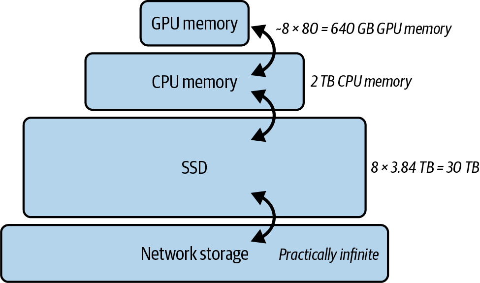
4.2 RAG vs CAG (Cache-Augmented Generation)
| 항목 | RAG | CAG |
|---|---|---|
| 방식 | 쿼리 시점마다 관련 문서를 검색해서 프롬프트에 주입 | 관련 컨텍스트 대부분/전체를 KV 캐시로 미리 캐싱해 재사용 |
| 장점 | 컨텍스트 길이·TTFT를 관리 가능한 수준으로 유지, 최신 정보 반영 용이 | 실시간 검색이 필요 없어 중복 연산 감소 → 더 빠른 TTFT |
| 구현 | - | 프리픽스 캐싱(정적 지식=프리픽스, 동적 프롬프트=접미사)이 CAG의 가장 단순한 구현 |
CAG가 최근 힘을 받는 이유는 두 가지입니다: ① 컨텍스트 윈도우가 10만~100만 토큰까지 확장되면서 "lost in the middle"(중간 정보를 놓치는) [13] 문제도 완화되는 중인 긴 컨텍스트 모델의 발전, ② CPU 메모리/SSD/원격 스토리지 오프로딩 + 복제본 간 라우팅 기술 덕분에 대량의 지식을 캐싱해두는 것이 실용적으로 가능해진 KV 캐시 관리 엔지니어링의 발전입니다.
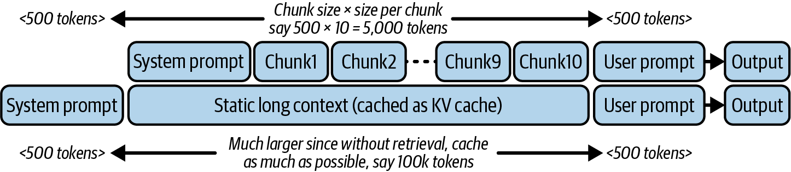
4.3 비용/지연시간 계산의 반전 — "CAG가 빠르지만 항상 더 저렴한 건 아니다"
| 항목 | RAG | Long-context CAG |
|---|---|---|
| 캐싱된 토큰 | 500 (시스템 프롬프트) | 100,500 (시스템 프롬프트+전체 컨텍스트) |
| 캐싱 안 된 토큰 | 5,500 (검색 청크 10×500 + 사용자 프롬프트) | 500 (사용자 프롬프트만) |
| TTFT | 5초 (기준) | ~0.5초 (10배 개선) |
| 요청당 비용 | ≈$0.007 | ≈$0.013 (약 1.8배 비쌈) |
비용 계산 재현: 일반 입력 단가 $1.25/1M, 캐싱된 입력 단가 $0.125/1M(예시 단가표 기준)를 그대로 대입하면 — RAG = (500×0.125 + 5,500×1.25)/10⁶ ≈ $0.0069(≈$0.007), CAG = (100,500×0.125 + 500×1.25)/10⁶ ≈ $0.0126(≈$0.013)로, 원문이 인용한 수치와 정확히 일치합니다(재계산으로 확인됨). 캐싱된 토큰도 완전히 공짜가 아니라 일반 입력의 10~25% 가격이 매겨지는데, CAG는 캐싱된 토큰량 자체가 압도적으로 많아서(100,500 vs 500) 할인된 단가에도 불구하고 총액이 더 커지는 것입니다.
💡 실무적 시사점: TTFT/응답 속도가 최우선이고 비용 여유가 있다면 → long-context CAG. 비용 효율이 중요하고 약간의 지연시간은 감수 가능하다면 → RAG가 여전히 유리할 수 있습니다. 실제 선택은 컨텍스트 크기, 캐시 재사용 빈도, 벤더별 캐싱 요금제를 모두 고려해 케이스별로 계산해봐야 합니다. ("캐시를 쓰면 무조건 싸진다"는 통념과 다른, 이 절의 핵심 반전 포인트입니다.)
Anthropic·OpenAI 모두 캐시가 히트된 프롬프트는 일반 입력가의 1/10로 청구합니다. Anthropic은 캐시를 처음 "쓸" 때(write) 일반가의 1.25배를 부과하되 캐시 수명은 5분입니다. 즉 같은 프리픽스를 단 2번만 재사용해도 (쓰기 1.25배 + 이후 재사용마다 0.1배) 캐시를 안 쓰는 것보다 이득이라는 명쾌한 손익분기 계산이 나옵니다 — 위 표의 벤더별 단가와 함께, "이 프리픽스를 몇 번이나 재사용할 것인가"가 CAG 도입 여부를 결정하는 핵심 변수임을 보여줍니다.
4.4 셀프 호스팅: LMCache의 3대 기법
LMCache는 KV 캐시를 서빙 스택의 일급 시민으로 취급해, 모델 가중치와 동일한 수준으로 저장·스케줄링·이동·축출을 관리하는 프레임워크입니다(vLLM, SGLang 지원).
- KV 캐시 오프로딩: GPU 메모리에만 두지 않고 GPU → CPU 메모리 → SSD → 네트워크 스토리지(Redis/S3)로 계층화합니다. CPU 메모리 활용 시 KV 캐시 공간이 약 3배, SSD까지 활용하면 최대 50배까지 확장 가능하다고 보고됩니다. 기존 프리픽스 캐싱만으로는 인스턴스 하나에 장문 컨텍스트 캐시 1개만 담겨서 여러 테넌트를 처리하려면 모델 복제본을 여러 개 띄워야 했지만, 오프로딩을 쓰면 인스턴스 하나가 여러 캐시를 담아 GPU↔CPU 스와핑으로 처리할 수 있어 비용을 크게 절감할 수 있습니다.
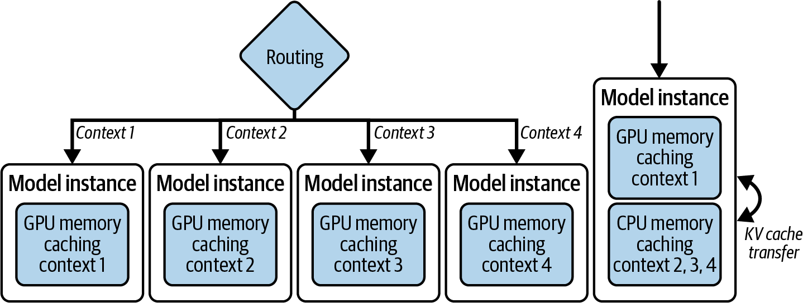
Figure 7-22. 왼쪽(오프로딩 없음)은 라우팅이 컨텍스트 1~4개를 각각 별도 Model instance(GPU 메모리에 컨텍스트 1개씩)로 보내야 해 인스턴스 4개가 필요합니다. 오른쪽(오프로딩 있음)은 인스턴스 1개가 GPU에 컨텍스트 1개, CPU 메모리에 나머지 3개를 함께 담아 KV cache transfer로 오가므로, 인스턴스 4개를 1개로 줄일 수 있습니다 — "3배 공간 확장"이 "4배 비용 절감"으로 이어지는 이유가 바로 이 복제본 감소입니다. - KV 캐시 압축 — CacheGen [14]: 전통적 양자화 또는 LMCache의 CacheGen(KV 캐시의 분포를 기반으로 압축된 비트스트림으로 인코딩)으로 크기를 줄입니다. 전송 속도가 빨라지고 네트워크 지연이 줄며, 압축 해제 오버헤드는 미미합니다.
- KV 캐시 블렌딩 — CacheBlend [15]: RAG는 여전히 더 큰 지식 베이스 접근, 최신 정보 반영, 인용 추적 용이성 면에서 강점을 가지므로 CAG가 RAG를 완전히 대체하지는 않습니다. 문제는 RAG 청크들의 조합 순서가 매번 달라 프리픽스 매칭에 실패하면 KV 캐시 미스로 전체 재계산이 발생한다는 것입니다. 단순히 KV 캐시를 이어붙이는(concat) 것은 실패합니다 — self-attention이 캐시들 간의 교차 토큰 상호작용까지 학습하기 때문에, 단순 concat은 이 관계를 깨뜨려 품질이 나빠집니다. CacheBlend는 전체를 재계산하는 대신, 교차 토큰 관계 보존에 필요한 일부(원문 언급 기본값 15%)만 선택적으로 재계산해 전체 재계산 비용은 피하면서 품질 저하를 최소화합니다.
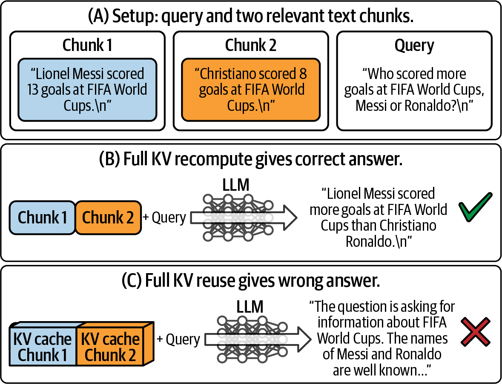
Figure 7-23. Chunk1="메시는 월드컵에서 13골을 넣었다", Chunk2="호날두는 8골을 넣었다", Query="누가 더 많이 넣었나?"라는 예시에서, 전체 재계산(체크✓)은 "메시가 호날두보다 많다"는 정답을 내지만, 단순 concat 재사용(X)은 "둘 다 유명하다"는 식으로 핵심을 회피하는 오답을 냅니다 — 두 문서를 비교하는 데 필요한 연결고리가 단순 이어붙이기로는 만들어지지 않는다는 실제 실패 사례입니다.
KV 캐시 오프로딩은 "자주 안 쓰는 서류를 사무실 책상 서랍(GPU)이 아니라 지하 창고(CPU)나 외부 문서보관업체(SSD)에 보관하는 것"과 비슷합니다. 가까이 둘수록 꺼내 쓰기 빠르지만 공간이 좁고, 멀리 둘수록 공간은 넓어지지만 꺼내오는 데 시간이 걸립니다.
Hands-on 실습에서는 LMCache를 적용한 vLLM이 미적용 대비 TTFT·처리량 모두에서 개선을 보였으며, 캐시 히트율이 매우 높은 반복적 워크로드에서는 처리량 격차가 10배 이상 벌어지는 극단적 사례도 관찰됐습니다(순차 요청 30개 중 vLLM은 10번째 요청 이후 지연시간이 급증하는 반면 LMCache는 일관성을 유지). 이런 수치는 캐시가 거의 항상 히트하는 상한선에 가까운 결과로 해석하는 것이 합리적입니다.
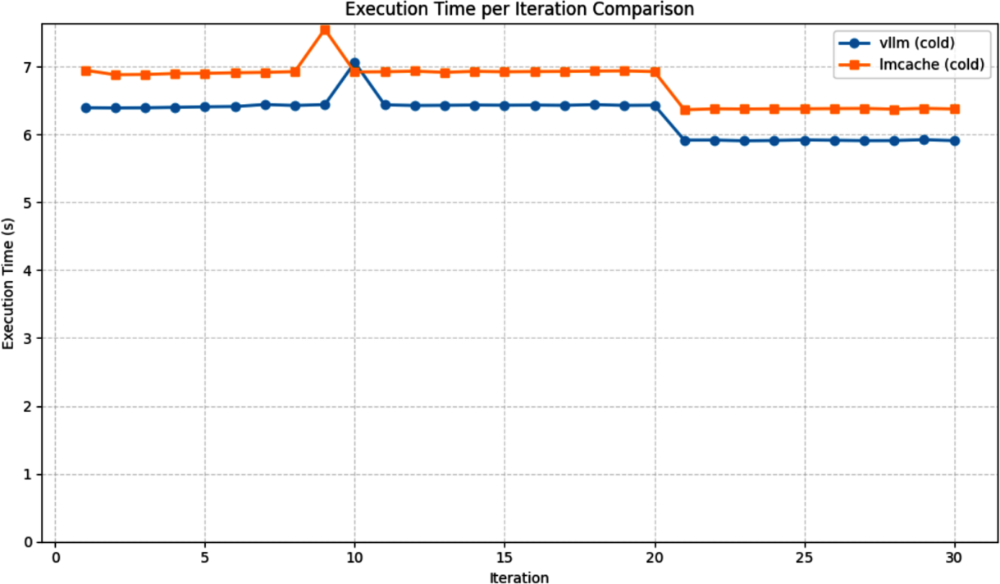
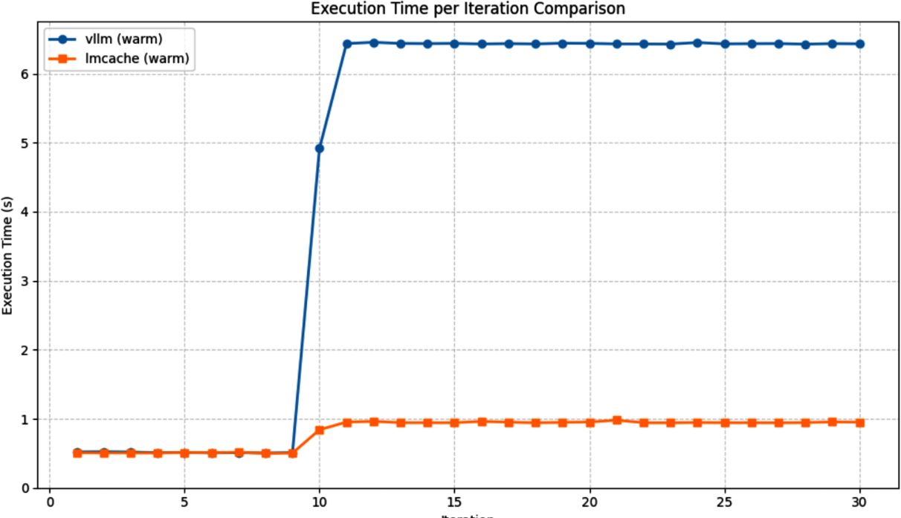
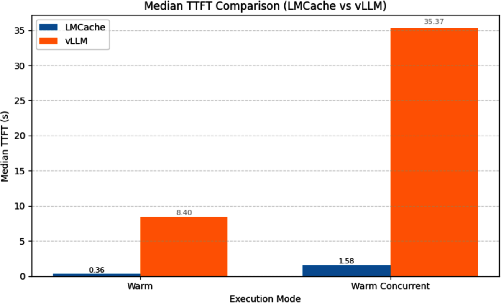
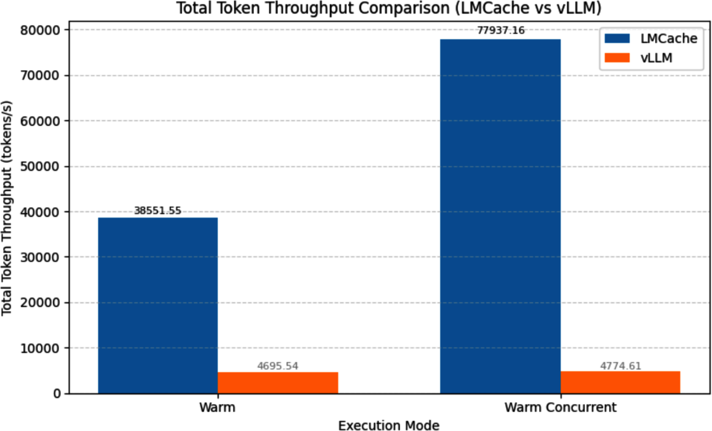
4.5 컨텍스트 자체를 줄이는 어텐션 패턴들 (보강)
지금까지의 LMCache·CAG는 "캐시를 어디에 보관·재사용할까"에 대한 답이었습니다. 이 절에서는 반대 방향의 접근, 즉 애초에 KV 캐시 자체의 크기를 줄이는 어텐션 설계를 살펴봅니다([PY] 08 영상 자막 기반 보강 내용 [16]).
KV 캐시가 실제로 얼마나 큰가: 70B 모델은 컨텍스트 토큰 1개당 약 320KB의 KV 캐시를 만듭니다. 128K 토큰짜리 요청 하나면 약 40GB — 이런 긴 요청이 4개만 동시에 들어와도 KV 캐시 총량이 모델 가중치 자체보다 커질 수 있습니다. 게다가 decode는 토큰마다 가중치뿐 아니라 KV 캐시 전체도 다시 읽어야 하므로, 긴 컨텍스트에서는 KV 캐시가 가중치와 같은 메모리 대역폭을 두고 경쟁합니다. FlashAttention은 어텐션 "계산"의 이동량을 줄여줄 뿐, 토큰이 늘어날수록 커지는 KV 캐시 "크기" 자체는 줄이지 못합니다.
| 접근 | 핵심 아이디어 | 예시/한계 |
|---|---|---|
| Sliding Window Attention | 각 레이어가 최근 N개 토큰만 직접 봄 | Mistral 7B는 창 크기 4,096. 창 밖 토큰은 다음 레이어로 전달된 정보를 통해서만 간접 영향을 미치므로(32개 레이어면 이론상 약 13만 토큰 전 정보까지 간접 도달 가능), 직접 보지 않는 토큰의 KV는 버릴 수 있음 |
| 학습된 Sparse Attention (DeepSeek NSA, Moonshot MoBA) | 어느 토큰을 볼지 규칙이 아니라 학습으로 결정 | DeepSeek Native Sparse Attention은 압축·중요 블록 선택·로컬 슬라이딩 3개 경로를 게이트로 결합. MoBA는 "어텐션에 적용한 MoE"로, 쿼리가 필요한 블록만 라우팅 |
| KV 축출(Eviction) (StreamingLLM, H2O) | 중요도가 낮은 과거 KV를 아예 버림 | StreamingLLM은 최초 sink 토큰+최근 윈도만 유지해 400만 토큰 스트림도 처리 가능(단, 중간 내용을 실제로 "기억"하는 것은 아님). H2O는 과거에 어텐션을 많이 받은 "heavy-hitter" 토큰까지 유지해 약 20% 캐시만으로 동작 |
⚠️ 희소화·축출의 효과는 과제 유형에 크게 의존합니다. 문서에서 사실 하나만 찾는 질문은 어텐션의 95%를 버려도 답이 남아있을 수 있지만, 여러 사실을 종합해야 하는 질문은 80% 축출부터 이미 실패하기 시작할 수 있다는 연구 결과가 있습니다. RAG는 필요한 조각만 프롬프트에 넣으므로 KV 자체는 커지지 않지만, 검색(retriever)이 정답 조각을 놓치면 모델이 그 정보를 복구할 방법이 없고, 매 요청마다 앞부분이 달라져 프리픽스 캐싱에도 불리하다는 트레이드오프가 있습니다.
운영 관점의 지표: 평균 TTFT/ITL보다 p99(꼬리 지연시간)를 봐야 하며, "GPU 사용률 100%"는 커널이 돌고 있다는 뜻일 뿐 goodput(SLO를 만족한 유효 처리량 — 이미 데드라인을 놓친 요청에 쓴 연산은 "팔 수 없는 비용"입니다)을 보장하지 않습니다. 함께 봐야 할 지표로 초당 토큰 수, 배치 충족도, 큐 대기시간, KV 캐시 적중률이 꼽힙니다 — 특히 에이전트 워크로드는 토큰 하나를 생성할 때마다 이전 대화 이력 약 100토큰을 다시 읽는 경우가 흔해, KV 캐시 적중률이 지연시간과 비용을 동시에 좌우합니다. 비용 예시로, H100 시간당 $3 기준 단일 H200에서 Llama 3.3 70B가 51 tokens/s로 서빙되면 약 $16/백만 토큰이지만, 여러 요청을 잘 배칭하면 약 $1.9/백만 토큰까지 낮아질 수 있습니다(서로 다른 하드웨어·최적화 수준의 비교이므로 절대값보다 "약 8배" 격차의 방향성에 주목해야 합니다). 최근 부상하는 추론(reasoning) 모델은 답을 내기 전 긴 "생각" 과정 자체가 모두 memory-bound decode라서, 16K 토큰 캡의 강화학습 롤아웃에서는 전체 시간의 약 84~91%가, 32K에서는 95% 이상이 이 decode 단계에 쓰인다는 관찰도 있습니다 — 즉 reasoning 모델의 학습 자체도 상당 부분 "추론 서빙"의 문제가 되어가고 있습니다.
4.6 NVIDIA Dynamo — 4계층 통합 스택
flowchart TB
L4["④ 라우팅/오케스트레이션\n(Dynamo, llm-d — 요청 분배·오토스케일링)"] --> L3
L3["③ 캐시 관리\n(LMCache 등 — KV 캐시 오프로딩·압축·블렌딩)"] --> L2
L2["② 실행 엔진\n(vLLM, SGLang, TensorRT-LLM — 스케줄링·배칭)"] --> L1
L1["① CUDA/Triton 커널\n(하드웨어 연산 최적화)"]
이 계층들은 서로 독립적이지 않으며, 한 계층의 병목이 다른 계층의 최적화 효과를 무력화시킬 수 있기 때문에 전체 스택을 함께 튜닝해야 진정한 프로덕션급 성능을 얻을 수 있습니다.
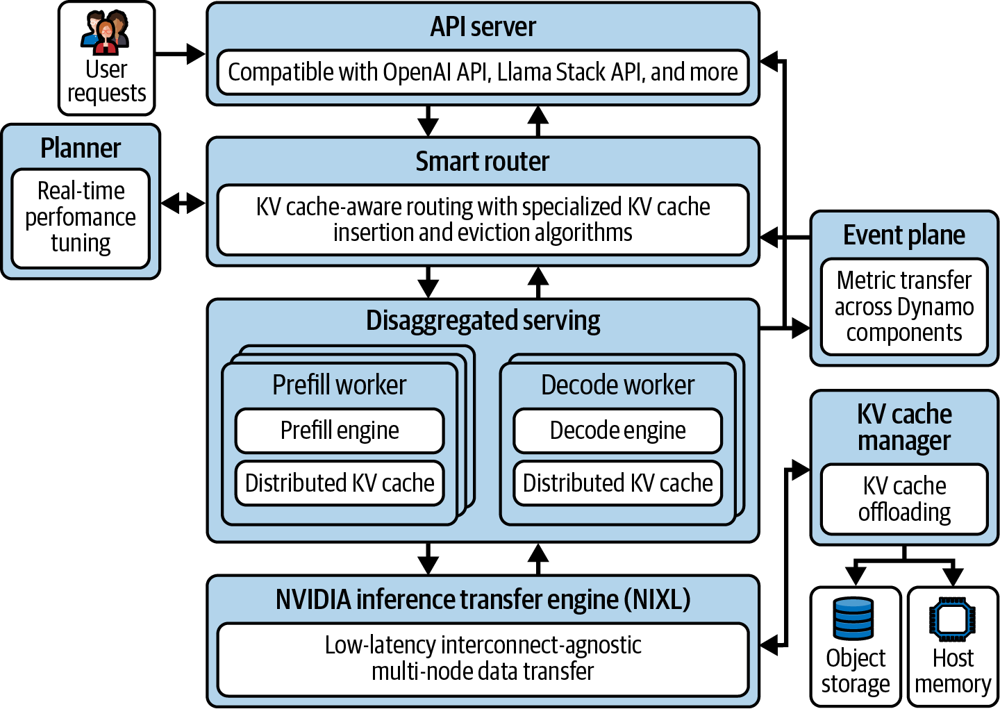
5. 딥리서치: FFN(MLP)과 Mixture of Experts(MoE)
CH7 본문 곳곳(Expert Parallelism, MoE 라우팅)에서 MoE가 계속 등장했습니다. 이 절에서는 "FFN이 뭔지도 모르는 사람"부터 시작해서, FFN과 MoE가 정확히 무엇이고 서빙 관점에서 왜 중요한지를 별도로 깊게 파헤쳐 보겠습니다.
5.1 FFN(Feed-Forward Network, = MLP)이 무엇인가
트랜스포머 블록 안에서의 위치: 트랜스포머의 각 레이어(블록)는 보통 두 개의 서브레이어로 구성됩니다.
입력 → [Attention 서브레이어] → [FFN(=MLP) 서브레이어] → 출력 (다음 블록으로)Attention이 먼저 "토큰들 사이의 관계"를 계산하고, 그 결과를 FFN이 이어받아 한 번 더 변환합니다.
왜 "MLP"라고도 부르는가: FFN은 구조적으로 가장 기본적인 신경망 형태인 Multi-Layer Perceptron(MLP, 다층 퍼셉트론)과 동일합니다 — 두 개의 Linear(선형 변환) 레이어 사이에 비선형 활성화 함수가 끼어 있는 구조이기 때문입니다.
FFN(x) = Linear2( Activation( Linear1(x) ) )- 첫 번째 Linear는 보통 입력 차원을 몇 배로 확장합니다(흔히 4배 안팎, 예: 4096차원 → 14336차원).
- 그 사이에 GeLU나 SwiGLU 같은 비선형 활성화 함수를 통과시킵니다 — 이 비선형성이 없으면 아무리 Linear를 쌓아도 결과적으로 하나의 Linear 변환과 다를 게 없어지므로, 모델이 복잡한 패턴을 학습하려면 반드시 필요합니다.
- 두 번째 Linear는 확장했던 차원을 다시 원래 차원으로 축소시켜 되돌립니다.
왜 FFN이 전체 파라미터에서 큰 비중을 차지하는가: FFN은 차원을 몇 배로 늘렸다 줄이는 두 개의 큰 가중치 행렬을 갖습니다. Attention도 여러 개의 가중치 행렬(Query/Key/Value/Output)을 갖지만 각 행렬이 "입력 차원 → 비슷한 차원"인 반면, FFN은 확장 비율이 크기 때문에 파라미터 수 자체가 대체로 더 큽니다 — 흔히 트랜스포머 블록 파라미터의 절반을 넘는 수준(약 2/3 안팎으로 보는 자료도 있음)이 FFN에 몰려 있다고 알려져 있습니다. 바로 이 "FFN이 파라미터를 많이 잡아먹는다"는 사실이, MoE가 "FFN을 쪼개서" 파라미터 문제를 다루는 이유와 직결됩니다.
Attention vs FFN의 역할 차이: Attention은 "이 토큰이 다른 어떤 토큰들과 관련 있는지"를 계산하는, 토큰들 사이를 가로지르는(token-mixing) 연산입니다. 반면 FFN은 각 토큰의 위치를 완전히 독립적으로, 즉 다른 토큰을 전혀 들여다보지 않고 그 토큰 자신의 표현만 변환합니다 — 이를 position-wise(위치별) 연산이라 부릅니다.
Attention을 "여러 사람이 모여 서로의 의견을 듣고 조율하는 회의"에 비유하면, FFN은 "각자 자기 자리로 돌아가 방금 들은 내용을 자기만의 지식과 경험에 비추어 곱씹어보는 개인 작업 시간"에 해당합니다. FFN의 가중치는 모델이 사전 학습 과정에서 축적한 "지식/패턴의 저장소" 역할을 한다는 해석이 널리 받아들여집니다 — 실제로 한 연구(Geva et al., 2021) [17]는 FFN이 단어·개념 간의 사실적 지식을 저장하는 거대한 소프트 키-값 조회 테이블(soft key-value lookup table)처럼 동작한다고 분석했습니다. 즉 FFN을 통과시킨다는 것은 "지금 이 토큰의 문맥적 의미를, 학습 때 저장해둔 방대한 지식 서랍에 비추어 다시 표현해보는 것"과 비슷합니다.
5.2 MoE(Mixture of Experts)가 무엇인가
핵심 아이디어: Dense FFN(모든 파라미터를 항상 다 쓰는 FFN) 하나를 쓰는 대신, 그 FFN을 여러 개의 작은 "전문가(expert) FFN"으로 쪼개놓고, 토큰마다 라우터(router/gate)가 "이 토큰은 어느 전문가(들)에게 보낼지"를 결정해서, 선택된 일부 전문가만 활성화(연산)시키는 구조입니다.
x
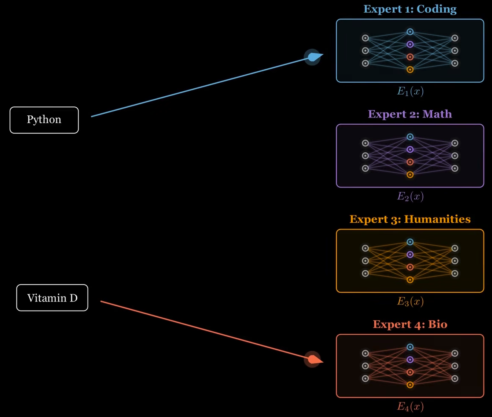
Router(라우터)의 동작: 라우터는 토큰의 표현 벡터 x를 입력받아 각 전문가에 대한 점수를 계산하고 확률로 정규화합니다.
G(x) = Softmax(TopK(x · W_g, K))
Output = Σ_(i∈TopK) G(x)_i · E_i(x)- Dense 방식: 모든 전문가를 항상 다 사용합니다. "전문가로 나눴다"는 이름만 다를 뿐 원래의 큰 FFN 하나를 쓰는 것과 계산량이 같아, 계산량 절감 효과가 없습니다.
- Sparse Top-K 방식: 전체 전문가 중 상위 K개만 실제로 계산합니다(예: 전체 256개 중 8개). 나머지 전문가의 가중치는 메모리에는 올려둬야 하지만 이번 토큰에 대해서는 연산하지 않으므로, 전체 파라미터 수는 유지하면서 토큰당 실제 계산량은 K/전체 비율만큼 줄어듭니다.
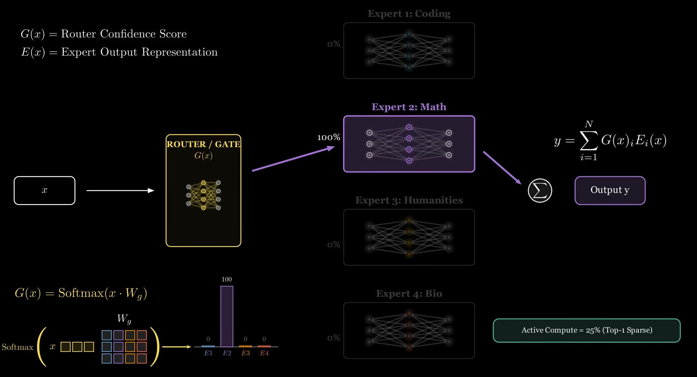
Router/Gate 수식 G(x)=Softmax(x·W_g)와 함께, 4개 전문가(Coding/Math/Humanities/Bio) 중 Math만 100% 선택되고 나머지는 0%인 Top-1 Sparse 예시입니다. 출력은 y=ΣG(x)ᵢEᵢ(x)이며 우측에 "Active Compute = 25%(Top-1 Sparse)"라고 명시되어 있습니다 — 전체 전문가 용량은 그대로 유지한 채 토큰 1개당 연산은 1/4만 쓴다는 뜻입니다. - Shared Expert(공유 전문가): 라우터 선택과 무관하게 모든 토큰에 대해 항상 활성화되는 공통 전문가입니다. "어느 토큰에나 공통으로 필요한 일반 지식/문법·구두점 패턴"을 전담해서, 라우팅되는 전문가들이 좀 더 특화된 패턴에 집중하도록 역할을 나눕니다(DeepSeek-V3, Llama 4 Maverick, Kimi K2가 채택 — Qwen3는 의도적으로 미채택).
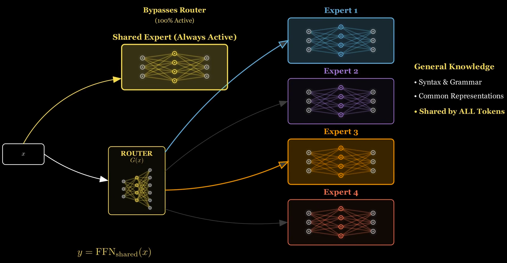
입력 x는 위쪽 Shared Expert(Always Active)로는 라우터를 우회해 100% 들어가고, 아래 Router G(x)는 Expert 1~4 중 일부만 선택합니다. Shared Expert는 Syntax & Grammar·Common Representations 같은 일반 지식(y=FFN_shared(x))을 전담해, 라우팅 전문가들이 특화 판단에 집중할 수 있게 합니다. - Fine-Grained MoE(세분화된 MoE): 전문가 하나의 크기를 작게 만들고 대신 개수를 늘리는 설계입니다. 예를 들어 큰 전문가 16개 중 2개를 고르는 대신(조합 120가지), 더 잘게 쪼갠 64개 중 8개를 고르면(조합 44억 가지 이상, 약 3,700만 배) "고를 수 있는 조합"의 다양성이 기하급수적으로 늘어나 더 정교한 라우팅이 가능해집니다. DeepSeekMoE 논문 [18]의 실험에서는 shared expert 분리 + fine-grained 세분화를 함께 적용할수록 지식 집약적 과제(TriviaQA, NaturalQuestions 등)에서 성능 개선 폭이 크다는 결과가 보고되었습니다.
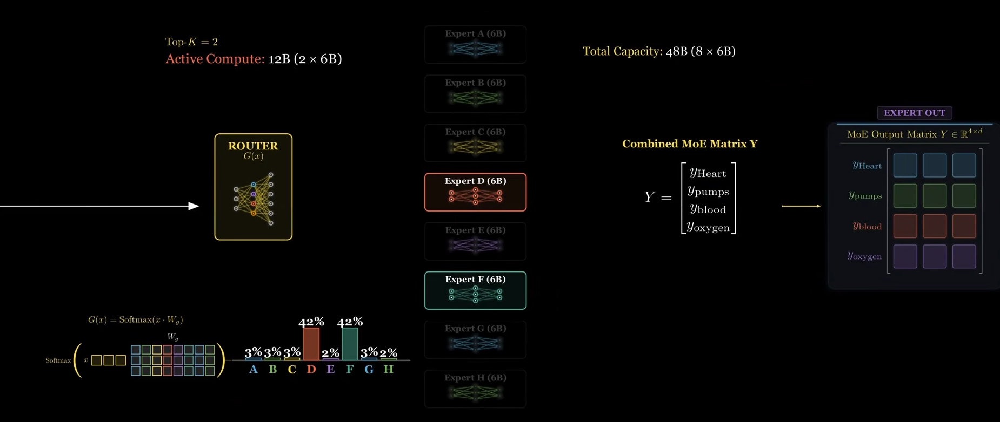
8개 전문가가 각 6B라 총 용량은 48B(8×6B), Top-K=2라 활성 계산은 12B(2×6B)입니다. 라우터 분포는 A·B·C·G 3%, E·H 2%, D·F 각 42%로 D·F 두 전문가만 밝게 선택되고, 출력은 [y_Heart, y_pumps, y_blood, y_oxygen]ᵀ 형태의 Y∈ℝ^(4×d) 행렬로 묶입니다.
보강: 라우팅에는 두 가지 방식이 있다 — Token-Choice vs Expert-Choice
지금까지 설명한 라우팅(각 토큰이 자신을 보낼 전문가를 고르는 방식)을 Token-Choice라고 부릅니다. 사실 이것 말고 반대 방향도 있습니다.
- Token-Choice(기본값): 토큰이 "나는 이 전문가로 갈래"를 스스로 결정합니다. 구현이 단순하지만, 앞서 본 것처럼 부하 불균형을 전혀 보장하지 못해 보조 로스나 Capacity Factor 같은 별도 안전장치가 필요합니다.
- Expert-Choice(2022, Zhou et al.) [19]: 반대로 각 전문가가 "이번 배치에서 내가 처리할 토큰 상위 C개(capacity)"를 직접 골라 가져갑니다. 전문가가 자기 용량만큼만 뽑아가므로 구조적으로 과부하가 불가능해, 보조 로스 없이도 완벽한 부하 균형이 보장됩니다.
- 그런데 왜 실제 서빙(디코더)에서는 잘 안 쓰일까: 치명적인 문제가 있습니다 — 전문가가 "이 배치에서 어떤 토큰이 나에게 가장 잘 맞는지" 순위를 매기려면 배치 안의 모든 토큰을 한 번에 놓고 비교해야 합니다. 그런데 자기회귀 디코딩은 토큰을 한 개씩 순서대로 생성하므로, 지금 시점에는 아직 생성되지도 않은 미래 토큰까지 비교 대상에 넣어야 하는 모순이 생깁니다(인과성 위반). 그래서 프로덕션 디코더 대부분은 이 불균형 리스크를 감수하면서도 Token-Choice를 고수하고, 대신 보조 로스나 DeepSeek-V3식 동적 바이어스로 균형을 보정합니다.
실제 모델 사례로 감 잡기
| 모델 | 총 파라미터 | 활성 파라미터 | 전체 전문가 | Top-K | Shared Expert |
|---|---|---|---|---|---|
| Mixtral 8x7B | 약 46.7B | 약 12.9B | 8개 | Top-2 | 없음 |
| DeepSeek-V3 | 671B | 37B | 256개 | Top-8 | 1개 |
| Llama 4 Maverick | 약 400B대 | 약 17~30B대 | 128개 | Top-K | 1개 |
| Kimi K2 | 1T(1,000B) | 약 32~60B대 | 384개 | Top-K | 1개 |
| Qwen3-235B(MoE) | 235B | 약 22B | 128개 | Top-8 | 없음(의도적 제외) |
| "Kimi K3"(추정) | 2.8T(2,800B) | <2%(약 56B 미만) | 896개 | Top-16 | 2개 |
⚠ 정정(2차 갱신): 원문 노션 페이지에는 "Shared Expert 2개 + 896개 표준 전문가, 16 Active/Token, 약 104B/2.8T Active"라는 초대형 모델 스펙 예시가 등장합니다. 최초 검증 당시에는 이 수치가 DeepSeek-V3 공식 사양(671B/37B)과 불일치해 출처를 특정하지 못했습니다. 이후 [Visual AI] MoE 아키텍처 영상 [20] 자막을 다시 정독한 결과, 이 영상이 "Kimi K3: 총 2.8조 파라미터, 896개 라우팅 전문가+공유 전문가 2개, 토큰당 Top-16 활성화, 활성 파라미터 2% 미만"이라는 사례를 직접 언급하고 있음을 확인했습니다 — 원문의 그 수치는 DeepSeek-V3가 아니라 이 모델(자막상 명칭, 공식 문서로 재확인은 못함)을 가리켰을 가능성이 높습니다. 자동 생성 자막이라는 한계상 모델명 표기는 추정치로 표시했고, 위 표의 DeepSeek-V3 행(671B/37B, 공식 사양 확인됨)은 그대로 신뢰할 수 있는 대조군으로 유지합니다. "총 파라미터는 조 단위인데 토큰당 활성 파라미터는 2% 안팎"이라는 sparse 활성화의 방향성은 처음부터 정확했던 부분입니다.
MoE 전체 구조를 대형 종합병원에 비유하면, 라우터는 "환자(토큰)의 증상을 듣고 어느 과로 보낼지 결정하는 접수처 간호사"이고, 각 전문가는 "정형외과·피부과·안과처럼 서로 다른 전문 분야의 의사"입니다. 병원 전체에는 수십~수백 개 과가 있지만(총 파라미터), 환자 한 명이 실제로 만나는 의사는 보통 1~2명뿐입니다(활성 파라미터). Shared Expert는 "어떤 환자든 접수하면서 공통적으로 재는 혈압·체온 측정 담당 간호사"처럼, 과와 상관없이 항상 필요한 일반적인 처치를 맡습니다.
Kaplan(2020)·Chinchilla(2022)의 스케일링 법칙에 따르면 모델을 키울수록 예측 오차가 일관되게 줄어들지만, 모든 가중치를 매번 통과시켜야 하는 Dense 모델은 HBM 메모리 대역폭 한계("Memory Wall") 때문에 토큰당 지연시간이 가중치 크기에 비례해 늘어나는 문제가 생깁니다. MoE는 지식 저장소인 FFN 레이어만 여러 개의 소형 전문가로 희소 분할하고 그 앞에 경량 라우터를 배치함으로써, 모델의 방대한 지식 용량은 유지하면서 연산량과 메모리 읽기 비용을 기하급수적으로 줄이는 절충안입니다.
MoE 학습의 숨은 과제: 부하 불균형(Load Imbalance) — 보강
MoE를 실제로 학습시켜보면 예상 밖의 문제가 생깁니다. 그냥 두면 라우터가 소수의 "인기 전문가"에게만 토큰을 몰아주는 Expert Collapse(전문가 붕괴) 현상이 나타나, 나머지 전문가는 거의 훈련되지 않습니다.
- 전통적 해법 — 보조 로스(Auxiliary Load Balancing Loss):
α · N · Σ(f_i · P_i)(f_i = 배치 내 전문가 i가 실제로 받은 토큰 비율, P_i = 라우터가 전문가 i에 부여한 평균 확률, N = 전문가 수)라는 페널티 항을 학습 목표에 추가해, 모든 전문가가 고르게 쓰이도록 강제합니다(완전 균등 라우팅일 때 이 값은 이론적 최솟값 1.0을 가집니다). 문제는 이 "균형을 맞추려는" 기울기와 "정확도를 높이려는" 크로스엔트로피 기울기가 역전파 과정에서 서로 충돌(opposing updates)해, 라우팅 품질 자체가 떨어질 수 있다는 것입니다. - DeepSeek-V3의 해법 — Auxiliary-Loss-Free Load Balancing: 아예 보조 로스를 학습 목표식에서 제거하고, 대신 각 전문가의 라우팅 점수에 동적 바이어스(bias) 오프셋을 더합니다. 특정 전문가에 토큰이 과도하게 몰리면(overflow) 그 전문가의 바이어스를 실시간으로 낮춰 다음 배치부터 덜 선택되게 하는 방식으로, 정확도 기울기를 방해하지 않으면서도 부하를 균형 있게 맞춥니다.
- Capacity Factor(CF)와 토큰 드롭: 실제 구현에서는 전문가별 처리 용량을
Capacity = CF × (총 토큰 수 × K) / 전문가 수로 미리 정해둡니다. 예를 들어 CF=1.0인데 한 전문가에 35개 토큰이 몰리고 용량이 20개뿐이면, 초과된 15개 토큰은 그 전문가의 연산 없이 드롭(drop)되어 잔차 연결(residual)로 건너뜁니다(품질 손실 위험). CF를 1.5~2.0으로 늘리면 드롭은 막을 수 있지만, 미사용 패딩 슬롯이 GPU 메모리를 낭비하는 트레이드오프가 생깁니다 — "부하를 못 맞추면 품질이, 여유를 너무 두면 메모리가 손해"인 셈입니다. - 보강: MegaBlocks — 드롭도 패딩도 없는 제3의 해법: Capacity Factor의 딜레마(드롭 vs 패딩 낭비) 자체를 우회하는 구현 기법입니다. 예를 들어 토큰 75개가 세 전문가에 35/25/20개로 불균등하게 몰렸다면, 이를 GPU 하드웨어가 선호하는 16~32토큰 단위의 가변 크기 블록으로 쪼갭니다(전문가1=35개→완전한 블록 2개+3토큰짜리 부분 블록 1개, 전문가2·3도 각각 2블록씩 → 총 7개 블록). 이 블록들을 하나의 연속된 스트림으로 처리하는 블록-희소 행렬곱(block-sparse matmul)을 쓰면, 토큰을 드롭하지도 않고 큰 제로 패딩도 만들지 않으면서 실제 토큰 수에 딱 맞춰 계산할 수 있습니다.
- 보강: 라우터의 수치 불안정성과 Router Z-loss: 학습이 진행될수록 라우터가 점점 확신에 차서 로짓(logit) 값이 커지는데, 로짓이 12만 넘어가도
exp(12)가 약 16만으로 FP16 최대 표현값(65,504)을 넘겨버려 소프트맥스 분모가 무한대로 발산(오버플로우)하고 결과가 NaN이 되어 학습이 무너질 수 있습니다. 순전파에서는 모든 로짓에서 최댓값을 빼는 "로짓 시프트"로 당장의 오버플로우는 막지만(소프트맥스는 이런 평행이동에 불변이라 확률값 자체는 안 바뀝니다), 로짓이 계속 커지는 근본 원인은 그대로 남습니다. Router Z-loss는 정규화 항의 로그값을 제곱해(β · (log Σexp(z_i))²) 벌점으로 추가하는 방식으로 이 근본 문제를 해결합니다 — β가 너무 작으면 로짓이 계속 커지고, 너무 크면 원래 학습 목표(정확도)를 방해하는 트레이드오프가 있습니다.
5.3 FFN에서 MoE가 왜 중요한가
근본적 딜레마: 모델을 더 똑똑하게 만들려면 일반적으로 파라미터(지식을 담는 그릇)를 늘려야 합니다. 하지만 Dense 모델에서 파라미터를 늘리면, 모든 파라미터가 매 토큰마다 계산에 관여하므로 서빙 비용과 속도가 파라미터 수에 거의 비례해서 나빠집니다. "더 똑똑하게"와 "더 싸고 빠르게"가 정면으로 충돌하는 것입니다.
MoE가 이 딜레마를 우회하는 방식: MoE는 이 둘을 분리합니다 — 총 지식 용량(전체 파라미터 수)은 계속 늘리되, 토큰 하나를 처리하는 데 실제로 쓰이는 연산량(활성 파라미터)은 낮게 유지하는 것입니다.
숫자로 보는 비교: Dense 48B 모델과, "8개 전문가(각 6B) 중 top-2를 쓰는 총 48B MoE 모델"을 비교해봅시다.
- Dense 48B: 토큰마다 48B 전부가 연산에 관여합니다(활성 비율 100%).
- 8-expert-of-6B, Top-2 MoE(총 48B): 토큰마다 실제로 계산되는 것은 선택된 2개 전문가, 즉 약 12B 규모뿐입니다(활성 비율 top-2/8 = 25%, 라우터·attention·shared 부분 제외한 순수 전문가 연산 기준 근사치).
즉 같은 총 파라미터(48B) 안에서 MoE는 Dense 대비 대략 4분의 1 수준의 활성 연산량으로 같은 "지식 용량"을 서빙할 수 있다는 방향성은 top-K/전체 비율 계산상 정확합니다. 다만 실제 서빙 비용은 활성 파라미터의 연산량뿐 아니라 전체 파라미터를 GPU 메모리에 올려둬야 하는 메모리 비용, 라우팅/통신 오버헤드까지 함께 고려해야 하므로 "활성 파라미터 비율 = 서빙 비용 절감 비율"로 단순 등치하는 것은 과장입니다 — 그 이유가 바로 아래 두 가지 새로운 문제입니다.
MoE가 서빙 관점에서 새로 만드는 문제:
- 메모리 문제: 어느 전문가가 선택될지는 토큰마다 다르므로, 전체 전문가 파라미터를 전부 GPU 메모리에 올려둬야 합니다. 활성 파라미터는 작아도 전체 모델의 메모리 풋프린트는 여전히 큽니다(DeepSeek-V3는 활성 37B이지만 전체 671B를 어딘가에는 올려둬야 합니다).
- 통신 문제: 전문가들이 여러 GPU에 흩어져 있으면, 토큰을 해당 전문가 GPU로 보내고(dispatch) 결과를 다시 받아와야(combine) 하는 all-to-all 통신이 필요합니다(2절 EP 참고).
이 두 문제를 정면으로 해결하기 위해 만들어진 것이 바로 2.6절에서 다룬 Expert Parallelism(EP)입니다 — 전문가들을 여러 GPU에 분산 배치해 메모리 문제를 풀고, DeepEP 같은 통신 라이브러리로 all-to-all 오버헤드를 최소화합니다. 즉 "MoE라는 알고리즘적 아이디어"와 "EP라는 시스템 인프라"는 한 쌍으로 붙어 다니는 개념입니다.
💡 "MoE가 항상 좋은 것은 아니다": CH8의 SGLang 실전 케이스북에서도 확인되듯, MoE와 Dense 모델 중 어느 쪽이 유리한지는 워크로드에 따라 갈립니다. MoE는 동일 활성 파라미터 기준 더 큰 "지식 용량"을 제공하지만, all-to-all 통신 오버헤드·라우팅 불균형(특정 전문가에 트래픽이 쏠리는 hot expert 문제)·더 큰 메모리 풋프린트라는 비용을 동반합니다. 반대로 Dense는 통신 오버헤드가 없고 예측 가능한 성능을 제공하지만, 같은 성능을 내려면 활성 파라미터 자체가 커야 합니다. MoE는 통신 인프라(NVLink/EP 구성)가 충분히 뒷받침되고 트래픽 패턴이 라우팅 오버헤드를 상쇄할 만큼 클 때 진가를 발휘하는, 트레이드오프가 있는 아키텍처 선택입니다.
핵심 요약
flowchart LR
subgraph CH7["CH7: 고급 최적화 기법 4대 축"]
A[① Speculative Decoding\nDecode 속도 자체를 높인다] --> B[② TP·PP·EP·DP\n모델·트래픽을 분산한다]
B --> C[③ PD Disaggregation\nPrefill/Decode를 분리한다]
C --> D[④ Advanced KV Caching\n캐시를 계층화·재사용한다]
B -.EP로 분산.-> E[FFN/MoE 딥리서치\n파라미터 확장 vs 연산 트레이드오프]
end
- 모든 고급 기법은 공짜가 아니라 트레이드오프입니다 — Speculative Decoding은 저부하에서만, PD 분리는 워크로드가 뚜렷이 편향될 때만, CAG는 TTFT를 얻는 대신 비용을 잃을 수 있고, MoE는 파라미터 확장을 얻는 대신 통신 오버헤드를 집니다.
- 규모가 커질수록 문제는 "연산을 어떻게 빠르게 할까"에서 "GPU 여러 대에 걸쳐 무엇을 어떻게 나누고, 언제 통신할까"로 바뀝니다 — 그 답이 TP(너비)·PP(깊이)·EP(전문가)·DP(복제)입니다.
- 이 모든 기법은 계층적으로 결합되어 CUDA 커널 → 실행 엔진 → 캐시 관리 → 라우팅/오케스트레이션이라는 통합 스택을 이룹니다. 다음 장(CH8)에서는 이 스택의 대표 사례인 vLLM의 내부 동작 원리를 자세히 다룹니다.
참고 자료
- [Kakao] 빠르고 비용 효율적으로 LLM 서빙하기: Speculative Decoding — YouTube
- Xia et al., "Unlocking Efficiency in Large Language Model Inference: A Comprehensive Survey of Speculative Decoding"(Spec-Bench), ACL 2024 Findings — GitHub
- Holtzman et al., "The Curious Case of Neural Text Degeneration", ICLR 2020 — arXiv:1904.09751
- 박규리, "[5편-1] GPU 연결 구조" — velog
- Shoeybi et al., "Megatron-LM: Training Multi-Billion Parameter Language Models Using Model Parallelism" — arXiv:1909.08053
- [PY] 05 - LLM 추론의 공학적 원리: 병렬 처리 — YouTube
- Liu, Zaharia, Abbeel, "Ring Attention with Blockwise Transformers for Near-Infinite Context", 2023 — arXiv:2310.01889
- Agrawal et al., "Taming Throughput-Latency Tradeoff in LLM Inference with Sarathi-Serve", OSDI 2024 — arXiv:2403.02310
- Zhong et al., "DistServe: Disaggregating Prefill and Decoding for Goodput-optimized Large Language Model Serving", OSDI 2024 — arXiv:2401.09670
- Patel et al., "Splitwise: Efficient Generative LLM Inference Using Phase Splitting", ISCA 2024 — arXiv:2311.18677
- [CNCF] From Model Serving To Distributed Inference: How Llm-d Evolves AI Platforms — YouTube
- [CNCF] LLM 셀프 호스팅 플랫폼 최적화 (LY Corporation) — YouTube
- Liu et al., "Lost in the Middle: How Language Models Use Long Contexts", TACL 2024 — arXiv:2307.03172
- Hu et al., "CacheGen: KV Cache Compression and Streaming for Fast Large Language Model Serving" — arXiv:2310.07240
- Yao et al., "CacheBlend: Fast Large Language Model Serving for RAG with Cached Knowledge Fusion" — arXiv:2405.16444
- [PY] 08 - LLM 추론의 공학적 원리: 추측적 디코딩과 긴 컨텍스트 — YouTube
- Geva et al., "Transformer Feed-Forward Layers Are Key-Value Memories", EMNLP 2021 — arXiv:2012.14913
- Dai et al., "DeepSeekMoE: Towards Ultimate Expert Specialization in Mixture-of-Experts Language Models" — arXiv:2401.06066
- Zhou et al., "Mixture-of-Experts with Expert Choice Routing", NeurIPS 2022 — arXiv:2202.09368
- [Visual AI] Mixture of Experts(MoE) 아키텍처 — YouTube
- [PY] 06 - LLM 추론의 엔지니어링: 전문가 혼합(Mixture of Experts) 모델 — YouTube